Для создания проекта Requality выберите в оконном меню пункт 'File' → 'New' → 'Project...'.
В появившемся диалоговом окне выберите 'Requality' → 'Requality Project' и нажмите кнопку'Next'.
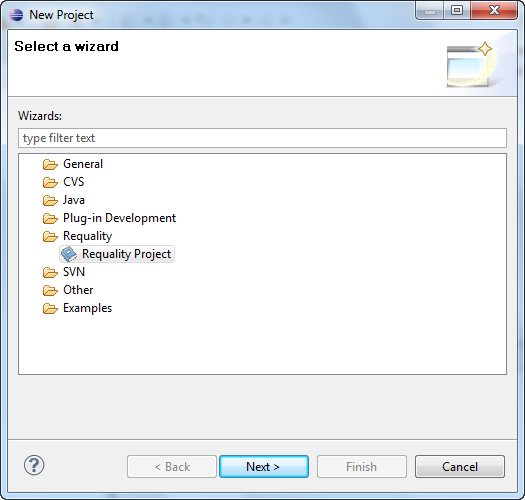
На следующей странице введите название проекта и нажмите кнопку 'Finish'.
Структура проекта Requality имеет вид:
Для того, чтобы открыть настройки проекта Requality, нужно в окне 'Requality Explorer' на проекте вызвать контекстное меню и выбрать пункт меню 'Properties'. Откроется окно настроек проекта. В левой части этого окна нужно выбрать 'Requality' или один из его подразделов. После чего в правой части окна отобразятся соответствующие настройки.
Для изменения настроек отображения узлов в проекте Requality нужно:
Подробнее о видах сортировки описано в разделе Сортировка элементов в проекте Requality.
От настройки 'Full name mode' зависит то, какой способ определения пути к узлу будет предложен в контекстном меню в окне 'Requality Explorer': 'By Full Name' (см. Полный путь к узлу (FullName)) или 'By User-Visible Name' (см. UserVisibleId).
Галочка 'Show description on elements' влияет на отображение узлов проекта в окне 'Requality Explorer'.
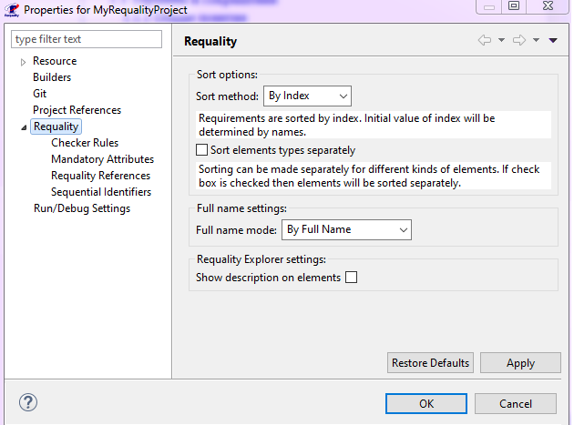
После завершения редактирования параметров нужно нажать кнопку 'Apply', а затем кнопку 'OK'. Свойства проекта будут сохранены, для данного проекта установится выбранный способ сортировки.
В Requality существует возможность настроить для узлов дерева требований правила проверки ('Checker Rules'), которые позволяют проверять различные свойства узлов на соответствие некоторым условиям. Проверять можно значения атрибутов, связи между узлами, иерархию. Правила записываются в формате Java-script. В правиле можно использовать конструкцию, позволяющую задать тип узлов, к которым оно будет применено. В результате установки правил узлы дерева требований, не удовлетворяющие указанным условиям, помечаются значком ошибки в окне 'Requality Explorer', а cписок обнаруженных проблем можно посмотреть в окне 'Problems'.
Для изменения настроек правил проверки нужно:
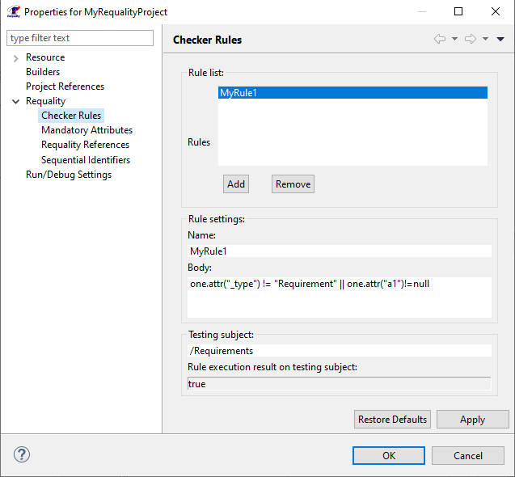
Далее нужно в поле 'Body' ввести само правило или отредактировать его, если было выбрано уже существующее правило.
Правило записывается на языке JavaScript в соответствии со следующими положениями:
one.attr("_type") != "<my_node_type>" || <my_rule>
Здесь:
После указания правила в настройках проекта соответствующие узлы проекта проверяются на соответствие правилу и в случае отрицательного результата помечаются в окне 'Requality Explorer' значком ошибки (маленький красный квадратик с крестом на символе узла). Полный список таких узлов можно посмотреть в стандартном окне 'Problems', которое открывается из главного меню ('File → Window → Show view → Other → General → Problems').
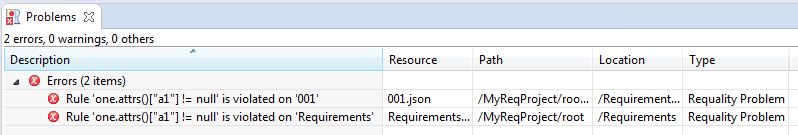
Несколько примеров записи правил:
one.attr("_type") != "TextNode" || one.attr("myAttr")>=1
one.attr("_type") != "Requirement" || one.attr("myAttr") != "myValue" || one.attr("Description").toLowerCase().search(/yes|agree|approved/i)>-1
(one.attr("_type") != "Requirement" && one.attr("_type") != "TextNode") || one.attr("myAttr") != "myValue" || one.attr("Description")!=null
var c = one.getChildren();
var r = null, i;
for(i=0;i<c.length;i++)
if(c[i].attrs()["Id"].contains("User")){
r = c[i];
break;
}
r == null || r.attrs()["_Name"] == "myValue"
В настройках проекта Requality можно задать обязательные атрибуты. То есть такие атрибуты, которые должны быть у каждого узла выбранного типа во всем проекте. Можно указать имя атрибута, его тип и значение, выбрать, для какого типа узлов дерева требований должен быть назначен этот атрибут (на данный момент эта функциональность реализована только для требований и для текстовых узлов). После этого все указанные атрибуты будут присвоены всем узлам выбранного типа. Также в настройках проекта можно удалить обязательный атрибут.
Обязательные атрибуты присваиваются, редактируются и удаляются в соответствии со следующими правилами:
Обязательный атрибут автоматически присваивается всем узлам выбранного типа в данном проекте. Он получает указанные в настройках тип и значение по умолчанию. Значение по умолчанию может быть пусто.
Если у некоторого узла уже был атрибут с таким же именем, то этот атрибут останется без изменений.
С момента задания обязательного атрибута каждый новый узел выбранного типа будет автоматически при создании получать этот обязательный атрибут.
При изменении в настройках проекта типа или значения обязательного атрибута уже проставленные атрибуты не изменятся. Изменения проявятся только в новых создаваемых узлах.
Изменить имя обязательного атрибута после его установки нельзя. Новое имя — это новый обязательный атрибут. Можно создать новый обязательный атрибут и удалить прежний.
Если атрибут был создан у некоторого узла автоматически как обязательный, то редактировать его имя в таблице атрибутов запрещено (невозможно), но можно менять тип, значение и прочие свойства.
При удалении из настроек проекта обязательного атрибута он не будет удален из всех узлов, где был указан, но при создании новых узлов он больше не будет для них указываться автоматически.
В качестве обязательного атрибута, кроме атрибутов таблицы атрибутов узла, могут выступать и другие — системные — атрибуты узла. Обычно это идентификатор. Могут также быть имя, описание и другие параметры. Имена таких атрибутов указываются с префиксом '%' (все параметры различных типов узлов подробно описаны в Глоссарии).
Атрибут, который является обязательным, в окне 'Properties' в таблице атрибутов элемента будет отображаться со звездочкой в самой первой колонке. Другие обязательные атрибуты, которые не принадлежат таблице атрибутов, никак помечены не будут.
Для указания (создания) обязательного атрибута нужно:
В 'Requality Explorer' на проекте вызвать контекстное меню и выбрать пункт меню 'Properties'. Откроется окно настроек проекта.
В левой части этого окна нужно развернуть пункт 'Requality' и выбрать 'Mandatory Attributes', тогда в правой части отобразятся настройки обязательных атрибутов проекта Requality.
В поле 'Node type' нужно выбрать тип узла ('Requirement' или 'Text node'), для которого требуется указать обязательный атрибут.
Далее требуется указать имя, тип и значение по умолчанию для атрибута. Сделать это можно двумя способами:
Вписать соответствующие данные в поля 'Name', 'Type' и 'Default value'. Причем при выборе сложных типов атрибута, таких как 'LIST' или 'REFERENCE', нужно кликнуть в поле 'Default value', далее кликнуть на появившуюся в поле кнопку с тремя точками и задать значение атрибута так, как это обычно делается для атрибутов такого типа (см. Редактирование параметров требования, раздел 'Attributes'). Значение по умолчанию можно не указывать.
Кликнуть по кнопке 'Find attr. names'. После этого станет активен выпадающий список 'Attribute name', в нем будет доступен список всех атрибутов узлов дерева требований данного проекта. Кроме атрибутов из таблицы атрибутов в нем будут доступны и другие — системные — атрибуты, например, имя или описание. Далее нужно выбрать один из атрибутов из списка, после чего его имя, тип и значение отобразятся выше в полях 'Name', 'Type', и 'Default value' соответственно. Эти значения можно отредактировать (тип доступен для редактирования только при изменении имени).
Нужно иметь в виду, что имена системных атрибутов (т.е. атрибутов не из таблицы атрибутов) указываются с префиксом '%'. При выборе такого атрибута нельзя изменить его тип.
Кликнуть по кнопке со стрелкой влево. После этого атрибут с указанными типом и именем появится в поле 'Defined attributes'.
Сохранить изменения (кнопка 'Apply') и закрыть окно настроек проекта (кнопка 'OK'). После этого заданные обязательные атрибуты появятся в узлах проекта в соответствии с перечисленными выше правилами.
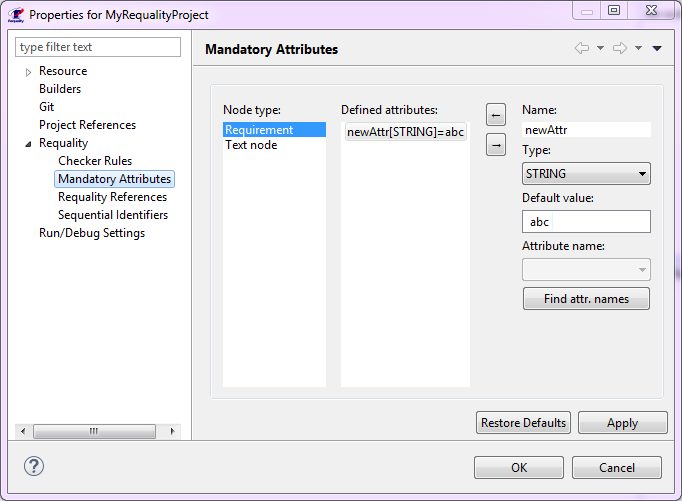
Для редактирования обязательного атрибута нужно:
В 'Requality Explorer' на проекте вызвать контекстное меню и выбрать пункт меню 'Properties'. Откроется окно настроек проекта.
В левой части этого окна нужно развернуть пункт 'Requality' и выбрать 'Mandatory Attributes', тогда в правой части отобразятся настройки обязательных атрибутов проекта Requality.
В поле 'Node type' нужно выбрать тип узла ('Requirement' или 'Text node'), атрибут которого требуется отредактировать.
В поле 'Defined attributes' нужно выбрать требуемый атрибут (кликнуть по нему).
Отредактировать тип или значение по умолчанию в полях 'Type' и 'Default value'. Обратите внимание, если отредактировать имя обязательного атрибута, это будет уже другой атрибут с новым именем. Также нужно иметь в виду, что тип системного атрибута изменить нельзя.
Нажать кнопку со стрелкой влево. Изменения атрибута будут сохранены. Внимание, если кнопку не нажать, то изменения не сохранятся! Также стоит иметь в виду, что если было изменено имя обязательного атрибута, то после нажатия этой кнопки сохранится новый обязательный атрибут с этим новым именем, причем атрибут со старым именем тоже останется.
Сохранить изменения (кнопка 'Apply') и закрыть окно настроек проекта (кнопка 'OK'). Теперь новые узлы будут при создании получать обновленный обязательный атрибут. При этом нужно иметь в виду, что в тех узлах, где обязательный атрибут уже был проставлен, он не изменится.
Для удаления обязательного атрибута нужно:
В 'Requality Explorer' на проекте вызвать контекстное меню и выбрать пункт меню 'Properties'. Откроется окно настроек проекта.
В левой части этого окна нужно развернуть пункт 'Requality' и выбрать 'Mandatory Attributes', тогда в правой части отобразятся настройки обязательных атрибутов проекта Requality.
В поле 'Node type' нужно выбрать тип узла ('Requirement' или 'Text node'), атрибут которого требуется удалить.
В поле 'Defined attributes' нужно выбрать требуемый атрибут (кликнуть по нему).
Нажать кнопку со стрелкой вправо. Атрибут исчезнет из поля 'Defined attributes'.
Сохранить изменения (кнопка 'Apply') и закрыть окно настроек проекта (кнопка 'OK'). Теперь новые узлы при создании не будут получать этот атрибут. При этом нужно иметь в виду, что в тех узлах, где обязательный атрибут уже был проставлен, он сохранится.
Для изменения настроек ссылок (подробнее об использовании ссылок см. Работа со ссылками между узлами дерева требований) нужно:
В 'Requality Explorer' на проекте Requality вызвать контекстное меню и выбрать пункт меню 'Properties'. Откроется окно настроек проекта.
В левой части этого окна нужно развернуть пункт 'Requality' и выбрать 'Requality References', тогда в правой части отобразятся настройки ссылок в проекте Requality.
В разделе 'References antonyms' отображается информация об именах исходящих и входящих ссылок. В поле 'Select reference name' будет отображаться список имен всех атрибутов проекта, имеющих тип 'REFERENCE', то есть список имен всех исходящих ссылок. Его нужно загрузить с помощью кнопки 'Load reference names'. В поле 'Default renames' отображается список уже заданных в проекте пар «имя исходящей ссылки → имя входящей ссылки», некоторые из этих пар по умолчанию заданы для любого проекта Requality, остальные создаются пользователем.
Чтобы указать или изменить имя входящей ссылки, требуется в поле 'Reference name' вписать имя соответствующей исходящей ссылки. Имя исходящей ссылки можно также указать, кликнув на нем в списке имеющихся имен ссылок. Если требуется изменить имя входящей ссылки, которое уже было задано в пару к имени исходящей ссылки, то можно сразу выбрать эту пару имен, кликнув по ней в поле существующих пар имен ссылок. Далее нужно в поле 'Backward reference name' изменить имя входящей ссылки и нажать кнопку 'Set'. Новое имя входящей ссылки будет сохранено в паре к указанной исходящей ссылке, эта обновленная пара будет отображаться в списке доступных пар имен ссылок.
В поле 'Default reference name' можно отредактировать имя, которое по умолчанию дается ссылке при создании новых ссылок с помощью кнопки '0,1,*' (см. Создание ссылки с помощью кнопки '0,1,*').
Сохранить изменения (кнопка 'Apply') и закрыть окно настроек проекта (кнопка 'OK'). Свойства проекта будут сохранены.
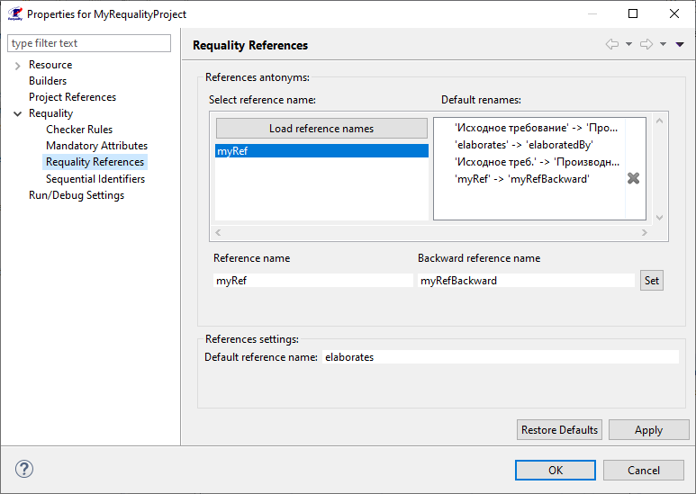
Для изменения настроек автогенерируемых идентификаторов узлов (подробнее об использовании автогенерируемых идентификаторов узлов см. Уникальные идентификаторы узлов дерева требований) нужно:
В 'Requality Explorer' на проекте Requality вызвать контекстное меню и выбрать пункт меню 'Properties'. Откроется окно настроек проекта.
В левой части этого окна нужно развернуть пункт 'Requality' и выбрать 'Sequential Identifiers', тогда в правой части отобразятся настройки автогенерируемых идентификаторов узлов в проекте Requality.
Если галочка 'Enable Sequential Identifiers' установлена, значит в проекте включен механизм автогенерируемых идентификаторов узлов. Если механизм отключен, то для его включения нужно установить эту галочку, после чего станут доступны остальные настройки автогенерируемых идентификаторов. Для отключения механизма, соответственно, нужно ее снять.
В поле 'Attribute name' можно указать имя для атрибута, содержащего автогенерируемый идентификатор. По умолчанию это 'ForeignID'.
В поле 'Prefix' можно указать префикс, который будет отображаться в автогенерируемом идентификаторе перед числовым значением. По умолчанию префикс отсутствует.
Далее нужно сохранить изменения (кнопка 'Apply') и закрыть окно настроек проекта (кнопка 'OK'). Свойства проекта будут сохранены.
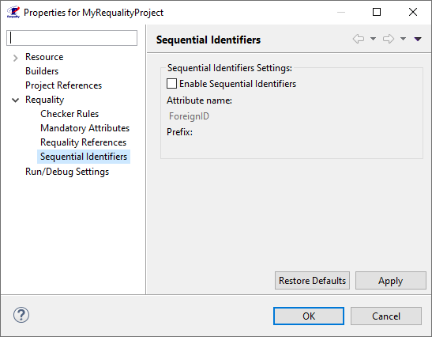
Глобальные атрибуты, которые распространяются на все дерево проекта, могут быть заданы в окне 'Properties'. Для этого нужно в 'Requality Explorer' кликнуть на названии проекта. После чего в 'Properties' отобразятся параметры данного проекта.
Глобальный атрибут может быть задан и отредактирован вручную в таблице атрибутов. Атрибут для задания перечислимого типа может так же быть создан с помощью полуавтоматического извлечения из уже существующих атрибутов узлов проекта (см. ниже).
Таблица атрибутов проекта во многом подобна таблице атрибутов требований. И работа с атрибутами проекта осуществляется аналогично (подробнее про работу с таблицей атрибутов требования см. 'Редактирование параметров требования, раздел Attributes'). Далее описаны особенности таблицы атрибутов проекта:
В таблице атрибутов проекта отсутствует столбец 'scope', т.к. все атрибуты проекта по умолчанию глобальны и область их видимости распространяется на все узлы проекта.
В таблице атрибутов проекта помимо стандартных типов атрибута доступен тип 'ENUM_DEFINITION'. Он служит для задания перечисляемого типа данных, который может быть использован в атрибутах других узлов проекта. Для задания перечисляемого типа:

Отредактировать атрибут проекта можно вручную в таблице атрибутов. Для редактирования списка значений атрибута с типом 'ENUM_DEFINITION' нужно снова открыть редактор списка значений атрибута 'Enum definition editor', кликнув по кнопке в столбце 'Value'.
Глобальный атрибут для задания перечислимого типа можно создать вручную в таблице атрибутов (как описано выше), а также с помощью полуавтоматического извлечения из уже существующих атрибутов проекта. Для этого:
В окне 'Properties' проекта кликните по кнопке 'Extract enum definitions from attributes'. Откроется диалоговое окно 'Enum definition extractor dialog'.
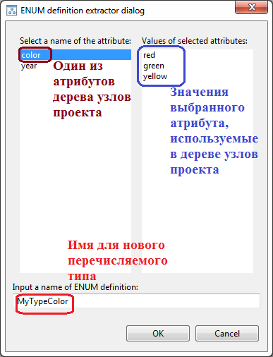
В этом окне в поле 'Select a name of the attribute' выберите имя атрибута, тип которого вы хотите преобразовать в перечисляемый. Справа в поле 'Values of selected attributes' отобразится список значений этого атрибута, этот список собран со всех атрибутов с таким же именем, которые есть в узлах проекта.
Снизу в поле 'Select a name of ENUM definition' задайте имя для атрибута типа 'ENUM_DEFINITION', который будет создан на основании значений выбранного атрибута.
Нажмите кнопку 'OK'.
Теперь атрибут типа 'ENUM_DEFINITION' создан, он отображается в таблице 'Attributes' с заданным именем и в качестве списка значений имеет список значений, собранный со всех атрибутов с выбранным именем. В окне 'Properties' узлов, у которых были эти атрибуты, вы можете увидеть, что тип атрибутов изменился на новый созданный атрибут 'ENUM_DEFINITION'.
Для просмотра истории ревизий проекта Requality нужно в 'Requality Explorer' кликнуть на названии проекта. После чего в окне 'Properties' открыть вкладку 'History'. Подробнее о просмотре ревизий см. Просмотр истории ревизий у проекта Requality.
Для того чтобы начать выделять требования, сначала требуется импортировать один или несколько документов, содержащих требования. Требования могут быть записаны в свободной форме. Requality предусматривает импортирование в проект документов со следующими расширениями: 'doc', 'pdf', 'htm', 'html'. При этом Requality копирует исходный документ, преобразовывает его формат в 'xhtml' и помещает полученный документ в проект. Исходный документ не испытывает никаких изменений. Дальнейшая работа осуществляется над полученным xhtml-документом.
Requality позволяет импортировать документы по одному или группами, а также импортировать папки с документами.
Для импорта документов выберите узел 'Documents' (или его дочерний узел) с пиктограммой папки. В контекстном меню выберите 'Import Document...'.
Выбор директории. В открывшемся диалоговом окне 'Document Import Wizard' с помощью кнопки 'Browse...', расположенной справа от поля 'From directory:', укажите директорию, в которой находятся сами документы, содержащие требования, или папки с этими документами.
Выбор документа или папки. Есть несколько способов выбора документов:
В диалоге 'Document Import Wizard' в левом окне выберите (не отмечая галочкой) папку, в которой находится нужный документ (документы). При этом в правом окне отобразятся все документы, содержащиеся в этой папке, отметьте среди них галочкой требуемые документы.
Вы можете отметить галочкой какую-либо папку в левом окне. В этом случае все документы, содержащиеся в этой папке и во вложенных папках, будут выбраны для импортирования.
Вы также можете воспользоваться расположенными ниже кнопками 'Select all' и 'Deselect all', которые позволяют соответственно отмечать все документы или снимать отметку со всех документов в выбранной директории.
Настройка фильтра расширений документов. Как было указано выше, Requality предусматривает импортирование в проект документов с расширениями 'doc', 'pdf', 'htm' и 'html'. И по умолчанию в инструменте настроен фильтр, который позволяет импортировать только их. Если вы хотите импортировать документ другого типа, то нужно перенастроить этот фильтр. Чтобы это сделать, используйте в окне 'Document Import Wizard' кнопку 'Select types', которая позволяет настраивать фильтр на типы доступных для импорта документов:
Нажмите кнопку 'Select types'.
В открывшемся окне 'Select Types' в списке доступных расширений укажите галочками типы расширения тех документов, которые вы хотите импортировать. Документы с расширениями, которые в этом окне галочками не отмечены, доступны для импортирования не будут, вы не увидите их в окне импортирования.
В окне 'Select Types' для выбора расширений вы также можете использовать кнопки 'Select All' и 'Deselect All', которые позволяют соответственно отмечать все расширения или снимать отметку со всех расширений в списке.
Если вы хотите импортировать документ с расширением, которое в данном списке не указано, впишите это расширение в поле 'Other extensions:' (например: 'xhtml').
Помните, что импортирование документа с любыми расширениями, кроме 'doc', 'pdf', 'htm' и 'html', не предусмотрено в инструменте Requality, поэтому результат может быть некорректен!
Помните, если в выбранной для импорта папке вы не видите документ, который, вы уверены, в ней находится, проверьте настройки этого фильтра.
Если вы уже выбрали нужные вам расширения, нажмите кнопку 'OK'. Теперь документы, расширения которых вы указали в фильтре, будут отображаться в окне импорта.
Выбор целевой папки импортирования. Рассмотрим окно 'Document Import Wizard' дальше. Под полями выбора папок и документов находится поле 'Into folder:'. Укажите в нем папку проекта, в которую будут добавлены выбранные документы. По умолчанию в этом поле указана папка 'Documents' (корневая папка документов в проекте Requality) или ее подпапка, для которой вы выбрали меню 'Import Document...'. Но с помощью кнопки 'Browse...' возле этого поля вы можете выбрать или создать другую папку. (Подробнее о папках документов и других способах их создания см. Создание папок документов).
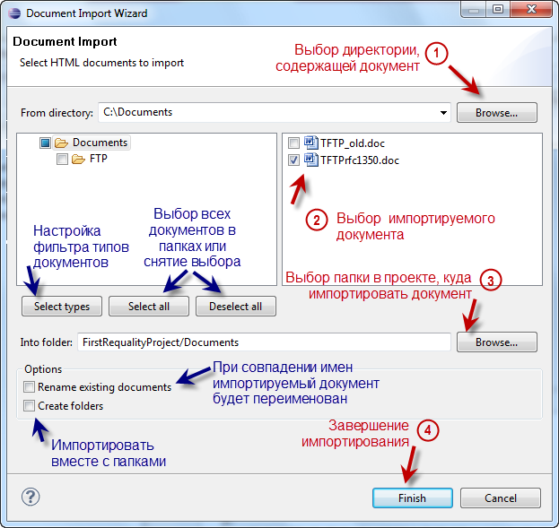
Если имена документов, которые вы хотите импортировать, совпадают с именами уже находящихся в этой папке документов, вы можете использовать опцию переименования. Выберите в окне импорта флажок 'Rename existing documents'. Теперь импортируемые документы в случае совпадения имен будут переименовываться с добавлением индексов.
Если вы импортируете не отдельные документы, а папку с документами целиком, и эта папка содержит вложенные папки с документами, то по умолчанию такая иерархия не будет сохранена в папке 'Documents' Requality-проекта. Все вложенные документы просто импортируются в корень целевой папки. Чтобы сохранить иерархию, выберите в окне импорта опциональный флажок 'Create folders'. Теперь при импорте все вложенные папки и документы будут импортированы с учетом иерархии.
Если вы выбрали документы для импортирования и указали целевую папку, завершите процесс импортирования нажатием кнопки 'Finish' в окне 'Document Import Wizard'.
При успешном прохождении процесса импорта в дереве проекта в целевой папке документов появятся импортированные документы, преобразованные в необходимый для дальнейшей работы формат 'xhtml'.
Для удаления документа выберите этот документ в окне 'Requality Explorer'.
Правой кнопкой мыши вызовите контекстное меню, выберите в нем пункт 'Delete Document'. Также для удаления документа можно использовать горячую клавишу 'Delete'.
После этого появится окно для подтверждения удаления документа. Нажмите в нем кнопку 'OK' для продолжения процесса удаления.
Если в удаляемом документе уже были выделенные фрагменты требований, на данном этапе удаления возникнет еще одно окно для подтверждения удаления, содержащее предупреждение о наличии выделенных фрагментов. Нажмите в нем кнопку 'OK' для продолжения процесса удаления. Внимание, в этом случае будет удален как сам документ, так и все его фрагменты, которые были использованы в требованиях! Сами требования останутся на месте, но из них исчезнут ссылки на соответствующие фрагменты удаленного документа.
Requality позволяет обновлять документацию путем переноса требований из старой версии документа в новую. Об этом подробнее написано в разделе 'Перенос фрагментов требований в новую версию документа'.
Для удобства работы с документами внутри узла 'Documents' можно создавать папки и размещать документы в них.
Для создания папки документов выделите узел 'Documents' или любую другую вложенную папку, в контекстном меню выберите 'New → Document folder'.
В открывшемся окне в поле 'Enter folder name' введите желаемое имя папки.
Имя не должно повторять имена папок, находящихся на том же уровне иерархии. В противном случае появится предупреждающее об этом сообщение, и продолжать процесс создания папки с таким именем будет невозможно.
Если вы ввели корректное имя, нажмите кнопку 'OK'. Папка с указанным именем появится в 'Requality Explorer' на выбранном уровне иерархии.
Теперь вы можете импортировать документы в новую папку.
Для удаления папки документов выберите эту папку в окне 'Requality Explorer'.
Правой кнопкой мыши вызовите контекстное меню, выберите в нем пункт 'Delete Folder'. Также для удаления папки документов можно использовать горячую клавишу 'Delete'.
После этого появится окно для подтверждения удаления документа. Обратите внимание, что удаление папки повлечет за собой удаление всех находящихся в ней документов и дочерних папок с их содержимым. Если вы уверены в правильности удаления выбранной папки, нажмите в окне подтверждения кнопку 'OK' для продолжения процесса удаления.
Если в удаляемой папке или ее дочерних папках содержится документ, в котором есть выделенные фрагменты требований, на данном этапе удаления возникнет еще одно окно для подтверждения удаления. Обратите внимание, что при удалении папки все эти документы будут удалены, что повлечет удаление выделенных в них фрагментов требований. Если вы уверены в правильности удаления, нажмите в окне подтверждения кнопку 'OK' для продолжения процесса удаления.
В проекте Requality все требования расположены в узле 'Requirements'.
Требование можно создать несколькими способами: из 'Requality Explorer', из 'UniEditor' и из 'ModuleEditor'. Требования можно создавать как с нуля, так и из шаблонов требований текущего проекта. Требования как потомки узлов можно создавать только для требований, у текстовых узлов не может быть требований-потомков.
Из 'Requality Explorer'. Выберите узел-требование 'Requirements' или любое его дочернее требование, назовем такое требование целевым. Вызовите правой кнопкой контекстное меню. Если в проекте есть шаблоны, тогда в контекстном меню будет отображаться пункт 'New → Requirement...' с выпадающим списком доступных шаблонов. Из этого списка можно создать требование по любому шаблону требования текущего проекта, а также можно создать пустое требование. Если в проекте нет шаблонов, то для создания требования будет доступен только пункт меню 'New → Requirement', выбор которого приведет к созданию пустого требования. После выполнения одного из перечисленных действий у целевого требования появится новое дочернее требование.
Из 'UniEditor'. Выберите узел-требование, к которому нужно добавить дочернее требование или требование того же уровня. Затем можно добавить новое требование одним из следующих способов:
Навести указатель мыши на правый верхний угол выбранного требования и из раскрывшегося меню выбрать пункт 'Add Child Requirement' для создания дочернего требования или 'Add Sibling Requirement' для создания требования того же уровня.
Навести указатель мыши на правый верхний угол редактора и выбрать аналогичные пункты из выпадающего меню.
С клавиатуры, нажав 'Ctrl+R' для создания дочернего требования или 'Ctrl+S' для создания требования того же уровня.
С клавиатуры, нажав 'Ctrl+D', после этого в правом верхнем углу редактора откроется выпадающее меню с подсказками, оттуда можно выбрать пункт меню как описано в п.2, либо нажав клавишу 'S' или 'R' для создания дочернего требования или требования того же уровня соответственно.
Если в проекте выбран 'активный шаблон', то в пунктах меню будет отображаться его название, то есть пункт меню будет называться, не 'Add Child Requirement', а 'Add Child Requirement - <basic>', где '<basic>' – это имя шаблона. После выполнения указанных действий откроется окно редактирования требования.
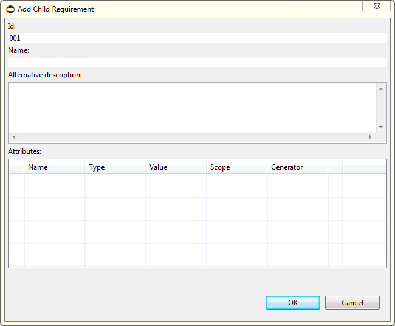
Если был выбран 'активный шаблон', то все поля требования, кроме поля 'Id', будут заполнены из этого шаблона. Поле 'Id' будет вычисляться следующим образом:
Если создается первое дочернее требование, то у него будет идентификатор '001'.
Если создается не первое дочернее требование или требование того же уровня, то система определит последний идентификатор требования на том уровне, на котором создается новое требование, инкрементирует его и присвоит новому требованию.
Из 'ModuleEditor'. Действия аналогичны действиям, описанным для редактора 'UniEditor' в предыдущем пункте.
Требование также можно создать путем копирования уже существующего требования.
Из 'Requality Explorer'. Копирование требования осуществляется с помощью пункта меню 'Copy'. Вставка скопированного требования осуществляется с помощью пунктов меню 'Paste into' (для добавления скопированного требования как ребенка к целевому узлу) или 'Paste near' (для добавления скопированного требования как соседа к целевому узлу). Скопированный узел вставится в выбранное место дерева требований. Также для копирования узла можно использовать горячие клавиши 'Ctrl+c' и 'Ctrl+v', при этом копирование будет происходить по принципу 'Paste near'.
Из 'UniEditor' и 'Module Editor'. Откройте соответствующий редактор. Кликните один раз по требованию, которое хотите скопировать. Оно станет выделенным. Нажмите сочетание клавиш 'Ctrl+c'. Затем так же кликните на требование 'Requirements' или любое его дочернее требование, назовем его целевым, и нажмите сочетание клавиш 'Ctrl+v'. Откроется редактор требования, где вы можете отредактировать параметры требования. Сделайте это и нажмите 'OK'. Требование вставится как сосед к целевому требованию.
Обратите внимание, что при удалении требования удаляются также все содержащиеся в нем дочерние требования и снимается разметка со всех выделенных фрагментов, на которые ссылается данное требование. Также вместе с требованием будет удалено все его поддерево, включая узлы всех типов (и требования, и комментарии, и другие возможные в случае использования дополнительных плагинов узлы).
Требование можно удалить из 'Requality Explorer', для этого нужно выбрать его в этом окне, вызвать правой кнопкой контекстное меню и выбрать пункт 'Delete Requirement'. В редакторах 'UniEditor' и 'Module Editor' требование можно удалить из выпадающего меню узла либо из выпадающего меню в правом верхнем углу редактора с помощью пункта меню 'Delete Requirement'. Также можно воспользоваться горячей клавишей 'Delete'. После одного из указанных действий нужно подтвердить удаление требования в появившемся окне, нажав кнопку 'OK'.
ВНИМАНИЕ! Если вы хотите скопировать фрагмент текста из редактора документа, воспользуйтесь для копирования горячими клавишами 'Ctrl+Shift+c'.
Создать требование вы можете из редактора документа ('Markup Editor'), сразу связав его с некоторым фрагментом текста.
Откройте документ, часть текста которого вы хотите присвоить новому требованию.
Выберите в 'Requality Explorer' узел-требование 'Requirements' или одно из вложенных требований. Назовем это выбранное требование целевым. Новое требование будет создаваться как подтребование целевого.
В редакторе документа выделите часть текста. Внимание! Если требуемый фрагмент принадлежит какому-либо требованию и уже выделен в тексте документа, не требуется выделять его курсором мыши, пропустите этот шаг.
Вызовите на выделенном тексте правой кнопкой мыши контекстное меню и выберите один из двух пунктов:
'Create new Requirement: <имя_целевого_требования>/<идентификатор_нового_требования>'. Предлагаемый идентификатор для нового требования генерируется в соответствии с правилом автоматического создании идентификатора требования, описанным в разделе Создание требования. Имя требования будет не задано.
'Create new Requirement: <имя_целевого_требования>/<имя_нового_требования>'. В качестве имени нового требования будет предлагаться текст выделенного фрагмента документа. Идентификатор такого требования будет сгенерирован в соответствии с правилом автоматического создания идентификатора требования, описанным в разделе Создание требования.
Обратите внимание, если целевым требованием является 'Requirements', то в этих двух пунктах контекстного меню имя целевого требования не указывается, они имеют формат, соответственно, 'Create new Requirement: <идентификатор_нового_требования>' и 'Create new Requirement: <имя_нового_требования>'.
Помните, что вы всегда можете поменять выбранные идентификатор и имя требования позднее, отредактировав соответствующие параметры требования (см. Редактирование параметров требования).
В итоге к целевому требованию будет добавлено вложенное требование с указанными идентификатором и именем. Оно будет содержать ссылку на выделенный фрагмент документа. Данный фрагмент документа в тексте документа будет маркирован желтым цветом.
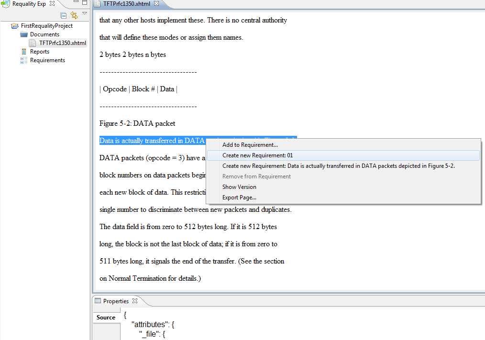
О простом способе создания требований вы можете прочесть в разделе 'Создание требования'.
Требование может содержать несколько фрагментов документа. Поэтому добавлять фрагмент можно как к требованию, которое еще ни на что не ссылается, так и к требованию, уже имеющему фрагменты.
Откройте документ, часть текста которого вы хотите присвоить новому требованию.
Выберите в 'Requality Explorer' требование, к которому вы хотите добавить фрагмент документа. Назовем это требование целевым.
В редакторе документа выделите нужную часть текста. Внимание! Если требуемый фрагмент принадлежит какому-либо требованию и уже выделен в тексте документа, не требуется выделять его курсором мыши, пропустите этот шаг.
Вызовите на выделенном тексте правой кнопкой мыши контекстное меню и выберите один из двух пунктов:
'Add to Requirement…' Этот пункт контекстного меню позволяет самостоятельно выбрать требование, к которому будет добавлен выделенный фрагмент. В открывшемся окне выберите требование, к которому вы хотите добавить фрагмент. Вы также можете создать новое требование с помощью кнопки 'Create New', которая откроет окно создания требования. Если вы уже выделили требование в окне выбора требования, нажмите кнопку 'OK'. Это требование теперь и будет целевым.
'Add to Requirement: <имя_требования>'. Этот пункт контекстного меню предлагает добавить выделенный фрагмент к требованию <имя_требования>. Обратите внимание, это и есть то самое целевое требование, которое вы выделили в окне 'Requality Explorer' при выполнении п.2.
Выделенный фрагмент требования теперь помечен в тексте желтым цветом и добавлен в целевое требование. То есть теперь целевое требование содержит ссылку на данный фрагмент текста.
Чтобы удалить фрагмент документа из требования, нужно в редакторе документа снять с этого фрагмента выделение. После чего требование больше не будет содержать ссылки на данный фрагмент документа. Внимание! Если данный фрагмент принадлежит нескольким требованиям одновременно, он будет удален из всех этих требований. (Если вы хотите удалить фрагмент только из одного требования, см. Удаление фрагмента в окне Properties). Для этого:
Дважды кликните на фрагменте в окне 'Properties'. Документ откроется и будет прокручен на то место, где находится требуемый фрагмент.
Найдите нужный фрагмент, вызовите на нем правой кнопкой мыши контекстное меню, выберите пункт меню 'Remove from Requirement'.
В результате с данного фрагмента документа снимается выделение. И ссылка на него удаляется из требования (отследить это можно в окне 'Properties' требования на вкладке 'Description' в поле 'Locations:' или в окне 'Requality Explorer').
Если вы хотите удалить фрагмент из конкретного требования, воспользуйтесь описанной ниже инструкцией. Такой способ удаления особенно удобен в том случае, если данный фрагмент принадлежит нескольким требованиям одновременно, но должен быть удален только из одного.
Откройте в окне 'Properties' нужного требования вкладку 'Description' (см. Редактирование параметров требования).
Выберите в списке 'Locations' требуемый фрагмент.
Вызовите на нем контекстное меню и выберите пункт 'Delete'. Или воспользуйтесь горячей клавишей 'Delete'.
Requality позволяет разметить документ автоматически. Для этого в 'Requality Explorer' выберите документ, вызовите контекстное меню и выберите 'HTML Headers Document Processor'. Он позволяет выделить в качестве требований тот текст, который находится в HTML-документе внутри тегов-заголовков (<h1></h1>, <h2></h2> и т.д.). После этого соответствующие фрагменты текста в документе будут размечены как требования.
Чтобы отредактировать параметры требования, щелкните по нужному требованию в 'Requality Explorer' или по одному из его фрагментов в окне 'Outline', в окне 'Properties' откроются свойства требования.
Далее рассмотрены только те параметры требования, которые можно изменить вручную.
Id
Идентификатор генерируется автоматически, но может быть изменен. Редактируйте его прямо в данном поле. (Обратите внимание, что идентификатор требования 'Requirements' не может быть изменен.)
Обратите внимание, если имя требования не задано, то требование идентифицируется по идентификатору.
Идентификатор должен быть уникальным для всех требований на одном уровне иерархии дерева требований. Если вы попробуете ввести неуникальный идентификатор, появится предупреждающий значок и такое изменение не будет сохранено.
Идентификатор не может начинаться или заканчиваться пробелами, при сохранении изменений такие пробелы удаляются.
При изменении идентификатора Requality считает, что требование со старым идентификатором было удалено, а требование с новым идентификатором было создано. Это может быть важно учитывать, например, при работе с репозиторием.
Name
Имя требования при создании требования по умолчанию не задано. За исключением одного случая: если вы создаете требование из редактора документа через пункт контекстного меню, позволяющий использовать выделенный фрагмент в качестве имени (см. Создание требования при выделении фрагмента текста).
Имя может не быть уникальным.
Редактируйте имя напрямую в данном поле.
Если имя не задано, то требование идентифицируется по идентификатору, в противном случае - по имени.
Type
По умолчанию установлено значение 'Requirement'.
Для редактирования раскройте выпадающий список и выберите одно из трех возможных значений: 'TextNode(Text)', 'TextNode(Header)' или 'Requirement'. В случае изменения значения на 'TextNode(Text)' или 'TextNode(Header)' узел изменит тип с требования на 'текстовый узел'. В этом случае дальше нужно будет с ним работать как с текстовым узлом (см. Работа с текстовыми узлами).
Отображение таблицы атрибутов. Атрибуты отображаются в виде таблицы с полями: 'Name' (имя атрибута), 'Type' (тип), 'Value' (значение), 'Scope' (область видимости) и 'Generator' ('генератор значений атрибута').
Добавление нового атрибута. Чтобы добавить атрибут, кликните по первой свободной ячейке столбца 'Name' и введите имя атрибута.
Редактирование атрибута. Чтобы отредактировать уже созданный атрибут, кликните в нужной ячейке таблицы атрибутов и отредактируйте ее: в столбце 'Name' отредактируйте имя, в столбце 'Type' выберите в выпадающем списке тип атрибута, в столбце 'Value' укажите значение, в столбце 'Scope' в выпадающем списке выберите область видимости, в столбце 'Generator' задайте 'генератор значений атрибута'.
Имя атрибута. Имя атрибута не может быть пустым. Оно также не может начинаться или заканчиваться пробелами. Имена атрибутов у одного требования должны быть уникальны. Атрибут с некорректным именем просто не будет сохранен.
Тип атрибута. В столбце 'Type' выберите тип атрибута. По умолчанию доступны типы: 'INT', 'FLOAT', 'BOOL', 'STRING', 'HTML', 'LIST', 'REFERENCE', 'DATE', 'ENUM_DEFINITION'. Однако в том случае, если для всего проекта задан глобальный атрибут типа 'ENUM_DEFINITION' (см.'Перечисляемый тип атрибута (Enum)'), имя этого атрибута тоже будет отображаться в выпадающем списке в столбце 'Type' с префиксом Ⓔ как доступный перечисляемый тип атрибута (подробнее о выборе значения такого атрибута см. ниже).
Значение атрибута. В поле 'Value' укажите значение атрибута. Также вы можете сгенерировать значение с помощью генератора (см. ниже).
Тип атрибута 'LIST'. Если выбран тип атрибута 'LIST', то вам нужно задать список значений этого атрибута. Сделать это можно с помощью генератора значений (см. ниже о задании и редактировании генератора значений) или вручную. Для задания списка значений вручную кликните по ячейке в столбце 'Value', затем кликните по кнопке, появившейся в ячейке справа. Откроется окно редактирования значений списка - 'List values editor'. В нем вы можете выбрать в выпадающем списке тип значений списка. А в таблице, кликая по ячейкам поочередно сверху вниз, вы можете указать и сами значения списка. Для изменения положения значения кликните по нужному значению и воспользуйтесь стрелочками вверх-вниз справа, значение переместится, соответственно, выше или ниже. Для удаления значения кликните по этому значению и нажмите крестик справа в таблице, значение будет удалено. Для завершения редактирования нажмите кнопку 'OK'. Для отмены редактирования нажмите кнопку 'Cancel'.
Тип атрибута, заданный как 'ENUM_DEFINITION'. Если выбран дополнительный тип атрибута, который задан пользователем для всего проекта как 'ENUM_DEFINITION', по умолчанию в качестве значения такого атрибута будет указано значение, определенное в списке 'ENUM_DEFINITION' на первом месте. Чтобы выбрать другое значение атрибута, кликните по ячейке в столбце 'Value', затем кликните по кнопке, появившейся в ячейке справа, и выберите в выпадающем списке одно из доступных значений (о том, как задать 'ENUM_DEFINITION' или изменить список его значений, см. Редактирование параметров проекта Requality).
Область видимости атрибута. Для задания области видимости атрибута кликните в ячейке 'SCOPE' и в выпадающем списке выберите один из вариантов: 'LOCAL', 'DIRECT_CHILDREN' или 'SUBTREE'.
'LOCAL' - атрибут виден только в данном требовании.
'DIRECT_CHILDREN' - атрибут виден в данном требовании и его детях первого уровня (то есть не виден в дочерних узлах детей).
'SUBTREE' - атрибут виден в данном требовании и всем его поддереве узлов.
Генератор значений атрибута. Чтобы задать или отредактировать 'генератор значений атрибута', кликните в ячейку генератора в строке соответствующего атрибута, затем кликните по кнопке, появившейся в ячейке справа. Откроется окно 'Attribute value generator', где вы можете задать все значения генератора: выберите тип генератора ('Attr. gen. type') в соответствующем выпадающем списке. А затем укажите дополнительные параметры генерации в зависимости от выбранного типа генератора:
Eсли выбран тип 'BY_FORMULA', укажите формулу.
Если выбран тип 'RANDOM', укажите минимальное значение, максимальное значение и требуемое количество значений. Нажмите появившуюся кнопку 'Generate new set' в том случае, если хотите сгенерировать другой набор значений по указанным параметрам.
Если выбран тип 'CYCLE', укажите начальное и конечное значения, а так же размер шага.
Результат работы генератора. Результат работы генератора отобразится в поле 'Preview'. Подробнее о настройках генератора см. 'Генератор значений атрибута'.
Завершение настройки генератора. Для завершения редактирования настроек генератора нажмите кнопку 'OK'. Для отмены редактирования нажмите кнопку 'Cancel'.
ВНИМАНИЕ! Редактирование вручную в ячейке 'Value' списка значений, который был задан генератором, удаляет генератор (т.е. ручное редактирование сгенерированных значений равносильно ручному редактированию значений без использования генератора).
Удаление атрибута. Чтобы удалить атрибут, в соответствующей ему строке таблицы нажмите кнопку-крестик в ячейке последнего столбца и в открывшемся диалоговом окне подтвердите удаление, кликнув по кнопке 'OK'.
Alternative description
По умолчанию поле пусто.
Редактируйте текст альтернативного описания прямо в данном поле.
Итоговый вид альтернативного описания доступен для просмотра на вкладке 'Preview'.
Locations
В окне 'Properties' вы можете выполнять только одно действие с фрагментами - удалять их. (См. Удаление фрагмента в окне Properties.)
Также для добавления и удаления фрагментов требования воспользуйтесь инструкциями из разделов 'Добавление фрагмента текста к требованию' и 'Удаление фрагмента в редакторе документа'.
Predicate
Редактируйте прямо в данном поле.
Предикаты записываются в соответствии с правилами языка JavaScript.
Чтобы посмотреть историю ревизий требования, щелкните по нужному требованию в 'Requality Explorer', после этого в окне 'Properties' откройте вкладку 'History'. В этой вкладке находится таблица с историей ревизий этого требования (о просмотре истории и сравнении ревизий подробнее см. Просмотр истории ревизий у узлов дерева требований). Верхняя строчка таблицы соответствует последней синхронизированной с глобальным репозиторием ревизии. Далее сверху вниз идут строки ревизий по убыванию, от более свежих к более старым.
Requality позволяет переносить выделенные фрагменты требований в новую версию документа. Допустим, у нас уже был документ с выделенными фрагментами. Однако появилась новая версия данного документа с исправлениями или дополнениями. Вы можете захотеть перенести разметку требований из старого документа в новый.
Для этого нужно сделать следующее:
Убедитесь, что новый документ тоже импортирован в проект Requality. Если нет, импортируйте его в текущий проект.
Выберите в окне 'Requality Explorer' новый документ, вызовите контекстное меню и выберите в нем пункт 'Update Document'.
В открывшемся окне выберите старый документ.
После завершения обработки выдается окно с информацией о том, сколько фрагментов было найдено в старой версии документа, и сколько фрагментов было перенесено в новую версию.
В любом случае, перенос всех требований должен быть проверен пользователем: для каждого требования пользователь или подтверждает корректный перенос требования, или модифицирует требование. Для этого после обработки документа процессором в перспективе Requality открывается окно 'Update Processor Tasks', отображающее текущее состояние каждого требования из каталога и предоставляющее возможность ручной смены статусов перенесенных требований.
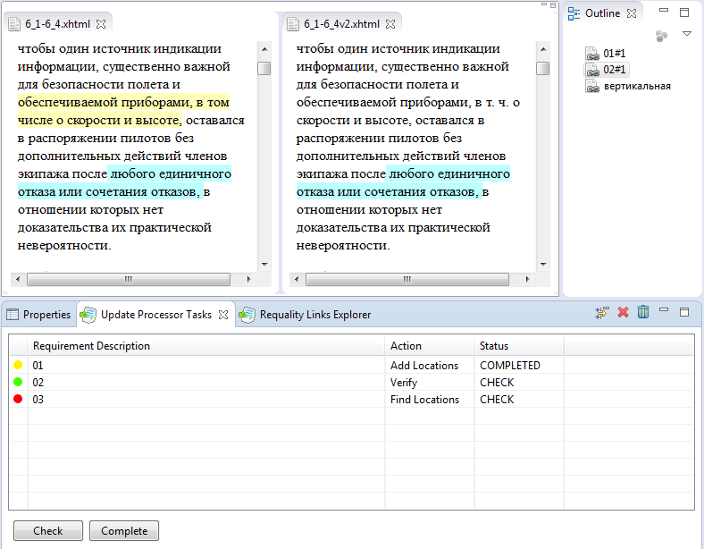
В данном окне пользователь может проверить корректность автоматического переноса требований, при необходимости внеся модификации. Таблица в этом окне представляет собой список задач для проверки. Для каждой задачи отображается требование, с которым она связана, и действие, которое предлагается выполнить. Всего действий три — по трем состояниям требований:
'Verify' – если все фрагменты требования были перенесены, пользователю предлагается проверить корректность переноса.
'Add Locations' – если была перенесена часть фрагментов требований, предлагается найти в новом документе аналоги не найденных фрагментов требований, которые не были перенесены, или убедиться, что в новой версии их нет.
'Find Locations' – не было перенесено ни одного фрагмента требования. Предлагается найти их аналоги в новой версии или убедиться, что данного требования больше нет в новой версии спецификации.
Кроме того, каждая задача имеет статус, один из двух:
'CHECK' - означает, что данная задача еще не проверена. Сразу после переноса требований все задачи имеют именно такой статус.
'COMPLETED' - означает, что данная задача уже проверена. Этот статус проставляется пользователем.
Дальнейшие действия пользователя выполняются им для каждой задачи в таблице.
Дважды кликнуть в окне на выбранной задаче. При этом выше откроются два окна редактора документа, показывающие это соответствующее задаче требование сразу в обоих документах: в старом и в новом. В старом документе фрагменты требования автоматически подсвечены в тексте. В новом документе подсвечены только перенесенные фрагменты требования, если ни один фрагмент не был перенесен, то документ будет открыт без выделенных фрагментов текста.
Замечание. При включенной синхронизации между окном 'Requality Explorer' и браузером (нажатой кнопке 'Link with Editor' в тулбаре 'Requality Explorer') из окна 'Update Processor Tasks' может некорректно открываться требование, для которого ни один фрагмент не был перенесен (с красной пиктограммой). Для корректного отображения таких требований рекомендуется отключать синхронизацию между браузером и окном 'Requality Explorer'.
Теперь, в случае разногласий с автоматическим переносом, пользователь может модифицировать требование: добавить к нему фрагменты или удалить.
После проверки задачи и, если необходимо, внесения изменений, нужно эту задачу пометить как проверенную. Для этого нужно выделить ее в таблице и нажать кнопку 'Complete'.
Можно настроить представление так, чтобы проверенные требования не отображались в таблице. Для этого нужно в меню окна 'Update Processor Tasks' нажать на кнопку 'Hide Completed Items'.
Еcли задача была ошибочно помечена, как проверенная, можно снова изменить ее статус на 'CHECK' с помощью кнопки 'Check'.
После того, как все задачи проверены пользователем и при необходимости модифицированы, можно удалить список задач из данного представления. Задачи нужно удалять с помощью кнопок из меню окна 'Update Processor Tasks': кнопка 'Delete Selected Task' удаляет одну выделенную задачу, а кнопка 'Delete all Update Processor Tasks' удаляет все задачи из окна 'Update Processor Tasks' для текущего проекта. Удаление можно отменить, выполнив команду меню 'Edit → Undo …'.
После переноса всех фрагментов требований рекомендуется удалить из проекта старую версию документа.
Внимание! Предполагается последовательный перенос требований для разных документов. Сначала рекомендуется перенести и при необходимости откорректировать требования из одного документа, затем проводить процедуру для следующих документов.
Requality позволяет добавлять к тестовым ситуациям и требованиям тесты при помощи системы генераторов тестов. В частности поддерживается генерация тестов по заданному шаблону.
Для генерации тестов можно воспользоваться 'Requality Explorer'. Для этого нужно:
Выбрать требование или тестовую ситуацию в 'Requality Explorer'.
Вызвать контекстное меню для выбранного элемента и выбрать пункт 'New → Test'.
В результате выполнения указанных действий на экране отобразится список доступных генераторов тестов. Если вместо списка генераторов появится диалоговое окно 'Test generators are not available', то требуется установить дополнительные плагины. На данный момент можно установить плагин 'Requality Coverage Tool', который находится на том же eclipse update site, что и Requality.
После выбора определенного генератора тестов будет вызван диалог настройки выбранного генератора.
Например, для генератора ttcn-тестов из плагина 'Requality Coverage Tool' потребуется выбрать проект, в котором будет создан новый тест, имя файла с тестом, подтвердить выбор определенного требования или тестовой ситуации, просмотреть и при необходимости изменить шаблон содержимого файла.
Также возможно вызвать диалог добавления теста из отчета 'Анализ покрытия требований' путем нажатия на кнопку 'Add test' в окне просмотра отчета.
Диалог добавления теста также доступен в главном меню Eclipse: 'File → New → Other → раздел 'Requality → Create Test'.
Массовые операции позволяют совершать различные манипуляции сразу для целого поддерева требований, в том числе, при необходимости, и для всего дерева требований проекта.
Для начала работы с массовыми операциями нужно совершить несколько общих для всех операций действий:
В 'Requality Explorer' выбрать целевой элемент в дереве требований проекта. Дальнейшая операция будет совершена для целевого элемента и (в зависимости от операции) всего его поддерева.
В открывшемся окне 'Mass ops wizard' будет предложено еще раз выбрать целевой элемент дерева требований, для которого будет осуществлена дальнейшая операция. И нажать кнопку 'Next >'.
Откроется окно со списком доступных массовых операций.
- операция для массового изменения значений атрибута. Позволяет по имени выбрать один из существующих атрибутов и установить ему одно значение, которое будет присвоено всем атрибутам с таким именем, которые есть в поддереве целевого элемента. Для вызова этой операции после выполнения первых двух шагов, описанных выше, нужно сделать следующее:
Выбрать в списке операцию 'AttributeValueChange' и нажать кнопку 'Next >'.
В окне 'Attribute Value Change Settings' в поле 'Select a name of the attribute:' выбрать требуемый атрибут. При этом в поле 'Values of selected attributes' отобразится список значений, которыми обладает данный атрибут в элементах поддерева целевого элемента.
Ниже в поле 'Type new value' требуется вписать новое значение. И нажать кнопку 'Finish'.
Для выбранного атрибута во всем поддереве элементов целевого элемента будет установлено новое указанное значение.
- операция для массового изменения имени и типа атрибута. Позволяет выбрать один из существующих атрибутов и изменить ему имя и/или тип, изменение коснется всех атрибутов с выбранным именем, которые есть в поддереве целевого элемента. Для вызова этой операции после выполнения первых двух шагов, описанных выше, нужно сделать следующее:
Выбрать в списке операцию 'AttributeTypeChange' и нажать кнопку 'Next >'.
В окне 'Attribute Type Change Settings' в поле 'Select a name of the attribute:' выбрать требуемый атрибут. При этом в поле 'Values of selected attributes' отобразится список значений, которыми обладает данный атрибут в элементах поддерева целевого элемента.
Ниже в поле 'Select new attribute name' требуется вписать новое имя (или оставить пустым, если имя не меняется).
В поле 'Select new attribute type' требуется выбрать в выпадающем списке новый тип атрибута (или оставить пустым, если тип не меняется).
Нажать кнопку 'Finish'.
Для выбранного атрибута во всем поддереве элементов целевого элемента будет установлено новое имя (если было задано) и/или тип такого атрибута изменится на новый (если был выбран).
- массовая операция, которая позволяет проставить атрибуты 'ForeignID' элементам дерева требований для синхронизации c идентификаторами в проекте DOORS (см. Экспорт изменений из проекта Requality в модуль DOORS). Осуществляется на основании выгруженного из DOORS файла ReqIF.
В 'Requality Explorer' выбрать корень дерева требований проекта - 'Requirements'. Дальнейшая операция будет совершена для всего дерева требований проекта.
В открывшемся окне 'Mass ops wizard' будет предложено еще раз подтвердить выбор корня дерева требований 'Requirements'. И нажать кнопку 'Next >'.
Выбрать в списке операцию 'DOORSIdImporter' и нажать кнопку 'Next >'.
В окне 'ReqIF file selection page' с помощью кнопки 'Browse:' выбрать в файловой системе выгруженный из DOORS файл ReqIF.
Нажать кнопку 'Finish'.
Атрибуты 'ForeignID' будут проставлены для всех элементов дерева требований проекта в Requality.
Чтобы создать, отредактировать или удалить шаблон узла, а также чтобы назначить 'активный шаблон узла' в проекте Requality, нужно сначала открыть окно редактора шаблонов:
Первый способ.
На любом узле дерева требований вызвать контекстное меню и выбрать пункт 'Edit in UniEditor', 'Edit in Module Editor' или 'Review'.
Далее в верхнем левом углу редактора нажать на кнопку 'Templates'.
После этого откроется окно редактора шаблонов 'Templates Editor', где вы можете создавать, удалять, редактировать шаблоны узлов и назначать 'активный шаблон'.
Второй способ.
Кликнуть на проекте в 'Requality Explorer' и в окне 'Properties' переключиться на вкладку 'Templates'. Содержимое этой вкладки по функциональности аналогично окну редактора шаблонов. Здесь вы тоже можете создавать, удалять, редактировать шаблоны узлов и назначать 'активный шаблон'.
Внимание! В редакторе шаблонов в поле 'List of templates' отображается список шаблонов только для того типа узлов, который выбран в выпадающем списке 'Select Node Type'.
Существует два способа создания шаблона узла:
Создание нового шаблона 'с нуля':
В редакторе шаблонов (как его открыть см. выше) выберите тип узла, шаблон которого вы хотите создать. При этом в поле 'List of templates' отобразятся все существующие в этом проекте шаблоны для узлов выбранного типа.
Нажмите кнопку 'Create template'. Откроется окно для создания нового шаблона выбранного типа.
В открывшемся окне укажите параметры шаблона. Редактирование параметров шаблона аналогично редактированию тех же параметров узла соответствующего типа в окне 'Properties'. Подробнее можно посмотреть здесь:
для требований раздел 'Редактирование параметров требования'
для текстовых узлов раздел 'Редактирование параметров текстового узла'
для тестовых ситуаций раздел 'Редактирование параметров тестовых ситуаций'
для настроек отчета раздел 'Редактирование параметров настроек отчета'
для комментария раздел 'Редактирование параметров комментария'
для виртуального узла раздел 'Редактирование параметров виртуального узла'
Для завершения создания шаблона нажмите 'OK'.
После этого вы увидите новый созданный шаблон в списке шаблонов 'List of templates'.
Создание нового шаблона на основании уже существующего узла. Созданный таким способом шаблон будет иметь те же параметры, что и узел, на основе которого он был создан.
В редакторе шаблонов (как его открыть см. выше) выберите тип узла, шаблон которого вы хотите создать. При этом в поле 'List of templates' отобразятся все существующие в этом проекте шаблоны для узлов выбранного типа.
Нажмите кнопку 'Extract template'. Откроется окно для выбора узла, на основании которого вы хотите создать шаблон. Обратите внимание, в списке будут доступны только те узлы проекта, тип которых был выбран в окне редактора шаблонов.
Для завершения создания шаблона нажмите 'OK'.
После этого вы увидите новый созданный шаблон в списке шаблонов 'List of templates'.
Чтобы удалить шаблон:
Откройте редактор шаблонов (как его открыть см. выше).
Выберите тип узла, шаблон которого вы хотите удалить. При этом в поле 'List of templates' отобразятся все существующие в этом проекте шаблоны для узлов выбранного типа.
Кликните в списке 'List of templates' по шаблону, который вы хотите удалить.
Нажмите кнопку 'Remove' справа от списка.
После этого вы увидите, что этот шаблон исчез из списка шаблонов, то есть был удален.
Чтобы отредактировать шаблон:
Откройте редактор шаблонов (как его открыть см. выше).
Выберите тип узла, шаблон которого вы хотите отредактировать. При этом в поле 'List of templates' отобразятся все существующие в этом проекте шаблоны для узлов выбранного типа.
Кликните в списке 'List of templates' по шаблону, который вы хотите отредактировать.
Нажмите кнопку 'Edit' справа от списка.
В результате откроется окно для редактирования параметров шаблона. Редактирование параметров шаблона аналогично редактированию тех же параметров узла соответствующего типа в окне 'Properties'. Подробнее можно посмотреть здесь:
для требований раздел 'Редактирование параметров требования'
для текстовых узлов раздел 'Редактирование параметров текстового узла'
для тестовых ситуаций раздел 'Редактирование параметров тестовых ситуаций'
для настроек отчета раздел 'Редактирование параметров настроек отчета'
для комментария раздел 'Редактирование параметров комментария'
для виртуального узла раздел 'Редактирование параметров виртуального узла'
Чтобы сделать уже созданный шаблон активным (см. 'активный шаблон'), выполните следующие действия:
Откройте редактор шаблонов (как его открыть см. выше).
Выберите тип узла, шаблон которого вы хотите сделать активным. При этом в поле 'List of templates' отобразятся все существующие в этом проекте шаблоны для узлов выбранного типа.
Кликните в списке 'List of templates' по шаблону, который вы хотите сделать активным.
Нажмите кнопку 'Set as active' справа от списка.
После этого вы увидите, что этот шаблон в списке 'List of templates' выделен жирным шрифтом. Это означает, что шаблон стал активным. Теперь все узлы такого же типа по умолчанию будут создаваться по этому шаблону.
В проекте Requality все текстовые узлы расположены в узле 'Requirements'. Во многом работа с текстовыми узлами идентична работе с требованиями (см. Работа с требованиями).
Создание текстового узла полностью идентично созданию требования (см. Создание требования).
Создание текстового узла путем копирования полностью идентично созданию требования путем копирования (см. Создание требования путем копирования).
Удаление текстового узла полностью идентично удалению требования (см. Удаление требования). Нужно помнить, что при удалении текстового узла будет удалено все его поддерево узлов.
Редактирование параметров текстового узла почти полностью идентично редактированию параметров требования (см. Редактирование параметров требования). Кроме нескольких исключений:
У текстового узла в окне 'Properties' во вкладке 'Main' в поле 'Type' можно выбрать тип текстового узла: 'TextNode(Text)' или 'TextNode(Header)'. Для этого нужно раскрыть выпадающий список этого поля и выбрать нужное значение. В этом же поле можно выбрать тип 'Requirement'. В этом случае узел перестанет быть текстовым узлом и станет требованием. (Про работу с требованиями см. Работа с требованиями).
У текстового узла для хранения описания используется поле 'Description', оно располагается в окне 'Properties' во вкладке 'Description' и работать с ним нужно так же, как с полем 'Alternative description' у требования. Аналогично просмотр итогового текста описания доступен в соседней закладке 'Review'.
Чтобы посмотреть историю ревизий текстового узла, щелкните по нужному текстовому узлу в 'Requality Explorer', после этого в окне 'Properties' откройте вкладку 'History'. Работа с этой вкладкой аналогична работе с соответствующей вкладкой у требования (см. История ревизий требования).
В проекте Requality все тестовые ситуации размещаются в узле 'Requirements' в листовых требованиях, то есть требованиях, не содержащих другие требования.
Обратите внимание, тестовая ситуация может быть добавлена только листовому требованию, то есть такому требованию, у которого нет вложенных требований.
Тестовую ситуацию можно создать несколькими способами: из 'Requality Explorer' и из 'UniEditor'. Тестовые ситуации можно создавать как с нуля, так и из шаблонов тестовых ситуаций текущего проекта.
Из 'Requality Explorer'. Выберите листовое требование, назовем такое требование целевым. Вызовите правой кнопкой контекстное меню. Если в проекте есть шаблоны тестовых ситуаций, тогда в контекстном меню будет отображаться пункт 'New → Test Purpose...' с выпадающим списком доступных шаблонов. Из этого списка можно создать тестовую ситуацию по любому шаблону тестовой ситуации текущего проекта, а также можно создать пустую тестовую ситуацию. Если в проекте нет шаблонов, то для создания тестовой ситуации будет доступен только пункт меню 'New → Test Purpose', выбор которого приведет к созданию пустой тестовой ситуации. После выполнения одного из перечисленных действий у целевого требования появится новая тестовая ситуация.
Из 'UniEditor'. Выберите листовое требование, к которому нужно добавить дочернюю тестовую ситуацию. Затем можно добавить новую тестовую ситуацию одним из следующих способов:
Навести указатель мыши на правый верхний угол выбранного требования и из раскрывшегося меню выбрать пункт 'Add New Test Purpose'.
Навести указатель мыши на правый верхний угол редактора и выбрать аналогичный пункт из выпадающего меню.
С клавиатуры, нажав 'Ctrl+P'.
С клавиатуры, нажав 'Ctrl+D', после этого в правом верхнем углу редактора откроется выпадающее меню с подсказками, оттуда можно выбрать пункт меню как описано в п.2, либо нажав клавишу 'P'.
Если в проекте выбран 'активный шаблон', то в пунктах меню будет отображаться его название, то есть пункт меню будет называться не 'Add New Test Purpose', а, например, 'Add New Test Purpose - <basic>', где '<basic>' – это имя шаблона.
После выполнения указанных действий откроется окно редактирования тестовой ситуации.
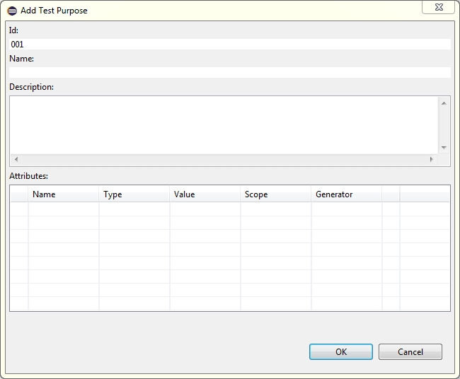
Если был выбран 'активный шаблон', то все поля тестовой ситуации, кроме поля 'Id', будут заполнены из этого шаблона. Поле 'Id' будет вычисляться следующим образом:
Если создается первая дочерняя тестовая ситуация, то у нее будет идентификатор '001'.
Если создается не первая дочерняя тестовая ситуация, то система определит последний идентификатор тестовой ситуации на том же уровне, инкрементирует его и присвоит новой тестовой ситуации.
Тестовую ситуацию также можно создать путем копирования уже существующей тестовой ситуации.
Из 'Requality Explorer'. Копирование и вставка узла осуществляется с помощью пунктов меню 'Copy' и 'Paste into'. Тестовая ситуация будет добавлена как ребенок к выбранному узлу. Причем вставку можно осуществить только на таком требовании, у которого нет дочерних требований. Также для копирования узла можно использовать горячие клавиши 'Ctrl+c' и 'Ctrl+v'.
Из 'UniEditor'. Откройте соответствующий редактор. Кликните один раз по полю тестовой ситуации, которую хотите скопировать. Оно станет выделенным. Нажмите сочетание клавиш 'Ctrl+c'. Затем так же кликните на требование 'Requirements' или любое его дочернее требование (назовем его целевым), не имеющее подтребований, и нажмите сочетание клавиш 'Ctrl+v'. Откроется редактор тестовой ситуации, где вы можете отредактировать ее параметры. Сделайте это и нажмите 'OK'. Тестовая ситуация вставится как ребенок к целевому требованию.
Чтобы отредактировать параметры тестовой ситуации, щелкните по нужной тестовой ситуации в 'Requality Explorer' - в окне 'Properties' откроются свойства тестовой ситуации.
Далее рассмотрены только те параметры тестовой ситуации, которые можно изменить вручную.
Id
Идентификатор генерируется автоматически, но может быть изменен. Редактируйте его прямо в данном поле.
Идентификатор должен быть уникальным для всех тестовых ситуаций, принадлежащих одному требованию. Если вы попробуете ввести неуникальный идентификатор, появится предупреждающий значок и такое изменение не будет сохранено.
Идентификатор не может начинаться или заканчиваться пробелами, при сохранении изменений такие пробелы удаляются.
Name
Имя тестовой ситуации при создании по умолчанию не задано.
Имя может не быть уникальным.
Редактируйте имя напрямую в данном поле.
Если имя не задано, то тестовая ситуация идентифицируется по идентификатору, в противном случае - по имени.
Status
По умолчанию установлено значение 'in process'.
Для редактирования раскройте выпадающий список и выберите одно из трех возможных значений.
Author
По умолчанию установлено имя пользователя, указанное при регистрации в Eclipse.
Редактируйте имя автора прямо в данном поле.
Attributes
Атрибуты тестовых ситуаций аналогичны атрибутам требований. И работа с ними осуществляется точно так же. См. подробное описание работы с атрибутами в разделе Редактирование параметров требования.
Description
По умолчанию поле пусто.
Редактируйте текст альтернативного описания прямо в данном поле.
Expected Results
По умолчанию поле пусто.
Редактируйте текст ожидаемого результата прямо в данном поле.
Predicate
Редактируйте прямо в данном поле.
Предикаты записываются в соответствии с правилами языка JavaScript.
Чтобы посмотреть историю ревизий тестовой ситуации, щелкните по нужной тестовой ситуации в 'Requality Explorer', после этого в окне 'Properties' откройте вкладку 'History'. Работа с этой вкладкой аналогична работе с соответствующей вкладкой у требования (см. История ревизий требования).
Тестовую ситуацию можно удалить из 'Requality Explorer', для этого нужно выбрать ее в этом окне, вызвать правой кнопкой контекстное меню и выбрать пункт 'Delete Test Purpose'. В редакторе 'UniEditor' тестовую ситуацию можно удалить из выпадающего меню узла либо из выпадающего меню в правом верхнем углу редактора с помощью пункта меню 'Delete Test Purpose'. Также для удаления тестовой ситуации можно воспользоваться горячей клавишей 'Delete'. После одного из указанных действий нужно подтвердить удаление тестовой ситуации в появившемся окне, нажав кнопку 'OK'.
Для тестовой ситуации доступен механизм генерации связанного с ней теста, подробней процесс описан в разделе Генерация теста для требования.
В проекте Requality два вида узлов участвуют в создании отчетов:
узел 'Настройки отчета', в котором описываются все настройки и параметры будущего отчета, в том числе шаблон отчета, определяющий основное содержание отчета,
и узел 'Отчет', который генерируется на основе настроек, описанных в узле 'Настройки отчета', и содержит сам отчет.
Requality предлагает для генерации набор стандартных отчетов. Для них существуют предустановленные шаблоны.
Часть предлагаемых шаблонов на данный момент относятся к экспериментальной функциональности, поэтому могут работать нестабильно, и для них может отсутствовать подробное описание в данной документации. В настройках отчета такие шаблоны явно сгруппированы в раздел 'ЭКСПЕРИМЕНТАЛЬНЫЕ'.
Также существует возможность добавить свой шаблон отчета.
Стандартные виды отчетов Requality:
ЭКСПЕРИМЕНТАЛЬНЫЕ
Отчет в Requality генерируется на основе шаблона отчета. Выбор шаблона осуществляется в настройках отчета из списка доступных шаблонов (см. Редактирование параметров настроек отчета). Помимо встроенного в Requality набора шаблонов отчетов можно использовать дополнительные шаблоны отчетов. Но для этого их сначала нужно добавить в Requality. Также можно удалить шаблон из списка доступных шаблонов отчетов, если он не является встроенным по умолчанию.
Чтобы добавить новый шаблон отчета в Requality нужно:
После этого отчет появится в списке доступных шаблонов во вкладке 'Templates' (см. рисунок ниже). А также он будет доступен для выбора во всех настройках отчетов.
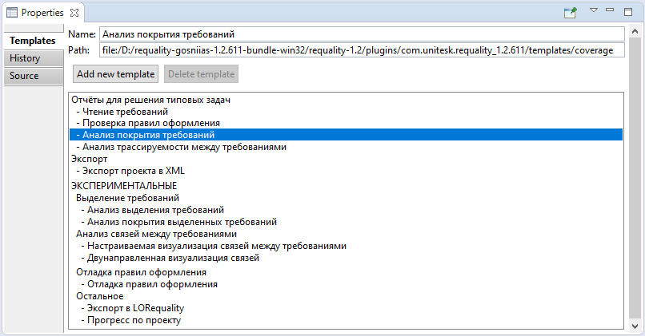
Чтобы удалить добавленный шаблон отчета нужно:
В результате этот шаблон исчезнет из списка доступных шаблонов и больше не будет доступен для выбора в настройках отчетов.
Для того чтобы создать отчет, сначала нужно создать настройки отчета. Отчет может генерироваться для какого-либо требования, называемого ключевым - 'Root requirement'. Такой отчет будет включать информацию о самом выбранном узле и о всем его поддереве дочерних узлов. От выбранного шаблона меняется вид и содержимое отчета.
Для создания настроек отчета на узле 'Reports' (или любой папке отчетов) вызовите контекстное меню и выберите пункт 'Create Report Settings'. Узел настроек отчета будет создан.
Чтобы отредактировать параметры настроек отчета, щелкните по нужному узлу настроек отчета в окне 'Requality Explorer', тогда в окне 'Properties' откроются его параметры.
Далее рассмотрены редактируемые параметры настроек отчета:
По умолчанию указано требование 'Requirements'.
Нажмите кнопку 'Browse...' рядом, в появившемся окне укажите нужное требование и нажмите кнопку 'OK'.
В выпадающем списке выберите тот шаблон отчета, который вам нужен (см. 'Параметры настроек отчета').
Флажок Generate report for related projects (применим не для всех шаблонов отчетов)
Установите флажок 'Generate report for related projects', чтобы в соответствии с данными настройками отчета сгенерировать отчеты для всех связанных проектов. То есть для таких проектов, узлы которых связаны ссылками с узлами текущего проекта (при условии, что эти проекты находятся в том же workspace).
Результатом генерации комплекса таких отчетов будет возможность переходить по ссылкам между узлами из одного отчета в другой.
Флажок Use project-scope numeration (применим не для всех шаблонов отчетов)
Установите флажок 'Use project-scope numeration', чтобы в случае генерации отчёта на уровне подраздела использовать исходную нумерацию объектов проекта.
В результате генерации отчёта с такой настройкой появится возможность сохранить такую же нумерацию объектов, какая была бы при генерации отчёта по всему дереву проекту от уровня корневого элемента.
Флажок Show root data in generation (применим не для всех шаблонов отчетов)
Установите флажок 'Show root data in generation' для отображения целевого требования в отчёте.
В результате генерации отчёта с такой настройкой появится возможность добавить в отчёт целевое требование как заголовок. Либо наоборот снятие данного флажка позволит не отображать в отчёте требование, для поддерева которого строится отчёт.
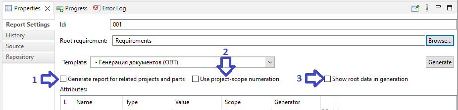
Атрибуты настроек отчетов в целом аналогичны атрибутам требований. И работа с ними осуществляется точно так же. См. подробное описание работы с атрибутами в разделе Редактирование параметров требования.
Кнопка Update Coverage Source. Такая кнопка появляется в окне параметров при выборе одного из шаблонов для отчета по покрытию.
Нажмите кнопку 'Update Coverage Source', чтобы вызвать помощник для установки источника информации о покрытии. Подробнее см. Отчет 'Анализ покрытия требований', Отчет 'Анализ покрытия выделенных требований', Отчет 'Прогресс по проекту'.
В результате установленный источник информации о покрытии отобразится как атрибут в таблице атрибутов. Поэтому при желании он может быть отредактирован вручную, но для его указания все же рекомендуется пользоваться предоставленным помощником.
Кнопка Open Settings. Такая кнопка появляется в окне параметров при выборе некоторых шаблонов.
Нажмите кнопку для открытия окна дополнительных параметров узла настроек отчета.
Дополнительные настройки отчета различаются в зависимости от выбранного шаблона отчета . Подробнее см. Отчет 'Прогресс по проекту', Отчет 'Настраиваемая визуализация связей между требованиями'.
При настройках по умолчанию проект Requality рассматривается как единый набор требований и сопроводительной информации.
При генерации отчёта с настройками по умолчанию будет сгенерирована одна страница с содержимым проекта согласно настройкам отчёта.
Иногда, особенно в случае большого количества требований и других объектов, содержащихся в спецификации, возникает необходимость в разбиении каталога требований на несколько взаимосвязанных, но при этом логически разделённых разделов (томов).
Для подобных целей в Requality предусмотрена возможность разбиения результата генерации (отчёта) на несколько глав или томов, объединённых в одном отчёте.
Доступны два варианта данной функциональности:
Requality позволяет генерировать отчёты по имеющимся в проекте требованиям с разбивкой на тома согласно разделам спецификации требований.
Для разбивки спецификации требований на тома по разделам 1 (первого) уровня необходимо выполнить следующие действия:
Установить фокус на корневой узел дерева проекта – 'Requirements'.
Перейти в область 'Properties'.
Открыть вкладку 'Main'.
Добавить дополнительный атрибут с названием 'MultiPartDocument', установить ему логический тип 'BOOL' и значение 'true'.
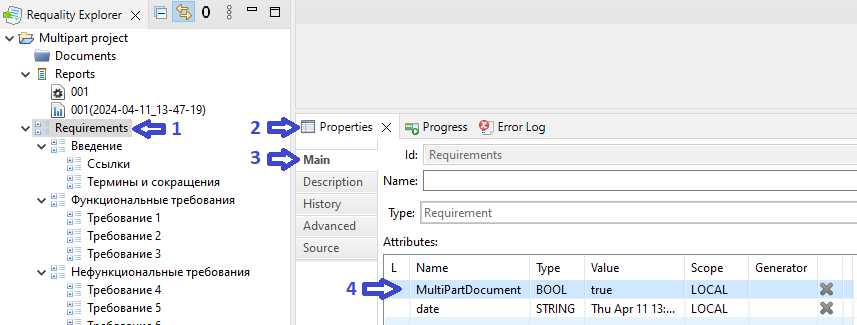
Создать для проекта настройки генерации отчёта – на уровне узла 'Reports' вызвать контекстное меню, перейти на пункт 'New'->'Report Settings'.
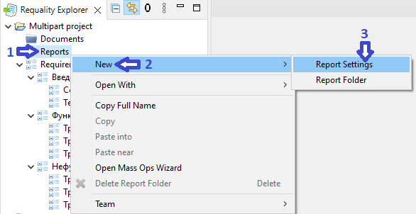
В создавшихся настройках отчёта перейти в окне 'Properties' на вкладку 'Report Settings'.
Выбрать в поле 'Template' шаблон 'Чтение требований' , после чего нажать кнопку 'Generate'.
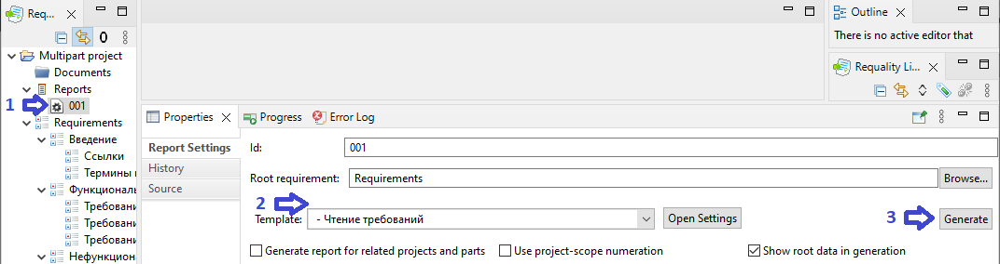
После завершения генерации отчёт откроется в области просмотра.
В шапке отчёта будут сформированы тома в виде вкладок в соответствии с разделами первого уровня (1). Поменять отображаемый в окне просмотра раздел можно с помощью клика по соответствующей вкладке отчёта.
Разделы уровней 2 и глубже, а также их содержимое, будут размещены внутри сформированных томов (2).
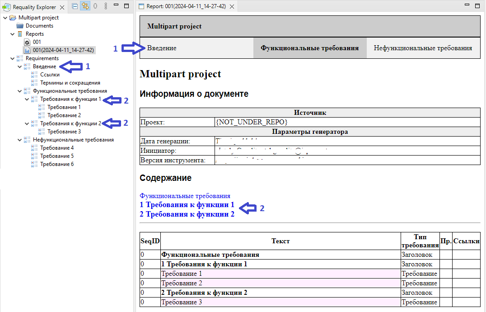
Requality позволяет генерировать отчёты по имеющимся в проекте требованиям с разбивкой на тома на уровне произвольно взятого раздела спецификации требований.
Для разбивки спецификации требований на тома на уровне раздела произвольного уровня необходимо выполнить следующие действия:
Установить фокус на корневой узел дерева проекта – 'Requirements'.
Перейти в область 'Properties'.
Открыть вкладку 'Main'.
Добавить дополнительный атрибут с названием 'MultiPartDocument', установить ему ссылочный тип 'REFERENCE'.
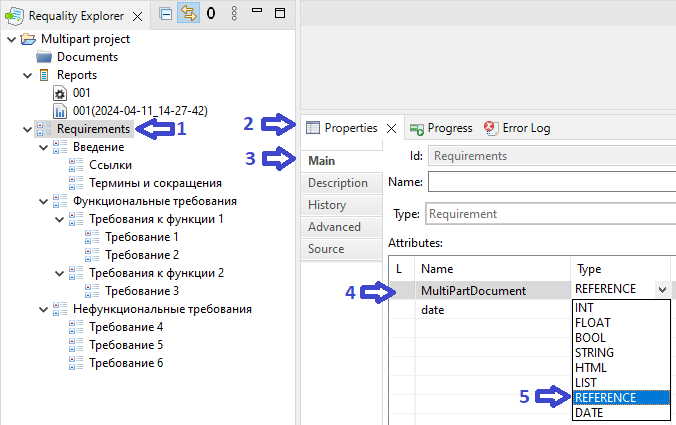
В поле значения добавленного атрибута многотомности нажать на кнопку '…', после чего в появившемся окне 'Link Editor' выбрать узел, на уровне которого необходимо сформировать тома. Нажать кнопку 'ОК'.
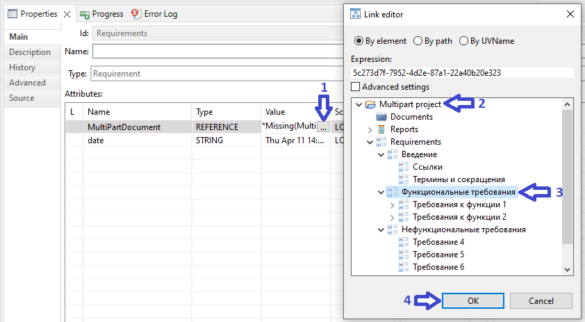
Далее на уровне узла, содержимое которого будет разбиваться на тома, необходимо добавить атрибут 'MultiPartDocument' логического типа 'BOOL' и задать ему значение 'true'.
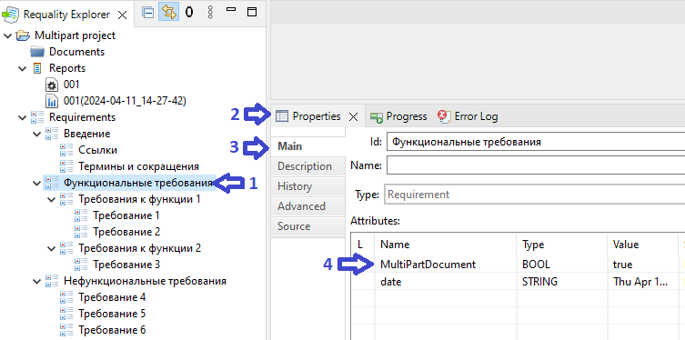
После чего по итогу генерации отчёта 'Чтение требований' в области просмотра откроется отчёт, сформированный так, как будто корневым узлом являлся указанный ранее раздел, а томами – его подразделы.
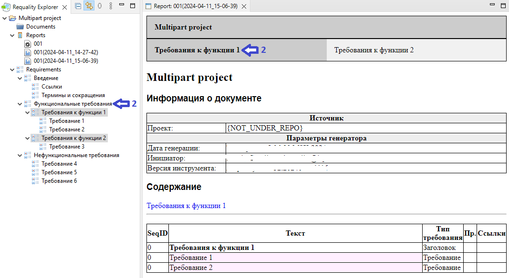
'Чтение требований' - отчет, отображающий содержимое требований и текстовых узлов в виде таблицы.
Таблица предваряется краткой информацией о проекте и содержанием, включающим ссылки на все нелистовые узлы.
В результате отчет состоит из нескольких разделов:
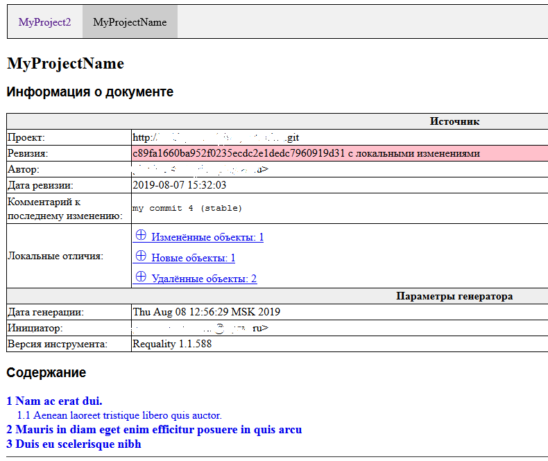
Подробнее про используемые в отчете атрибуты см. 'Рекомендации по разработке требований в соответствии с КТ-178С'.
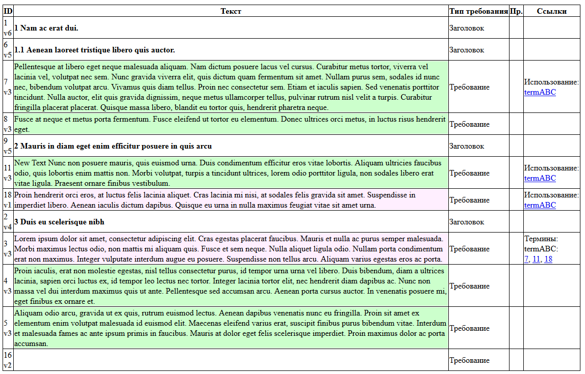
Для создания отчета 'Чтение требований' нужно:
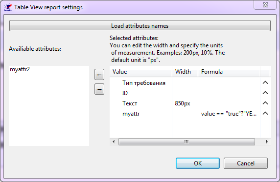
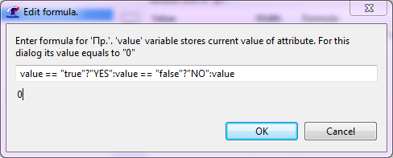
Шаблон отчета 'Проверка правил оформления' предназначен для отображения в табличном виде перечня проблемных узлов и тех правил, которые они нарушают. В него попадает та информация, которая обычно отображается в окне 'Problems'. То есть узлы, в которых нарушены правила 'Checker Rules', или, например, узлы с некорректно заданными свойствами.
Отчет состоит из нескольких разделов:
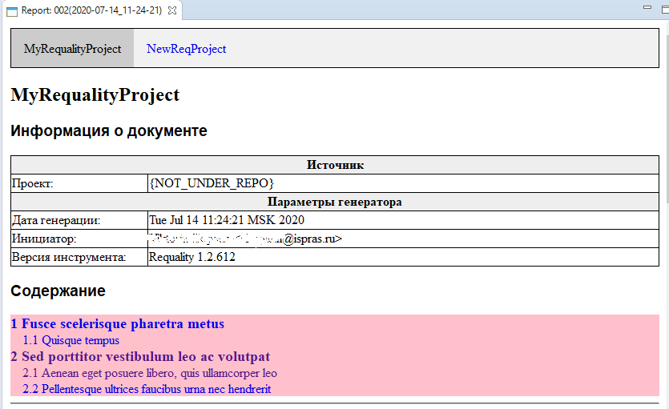
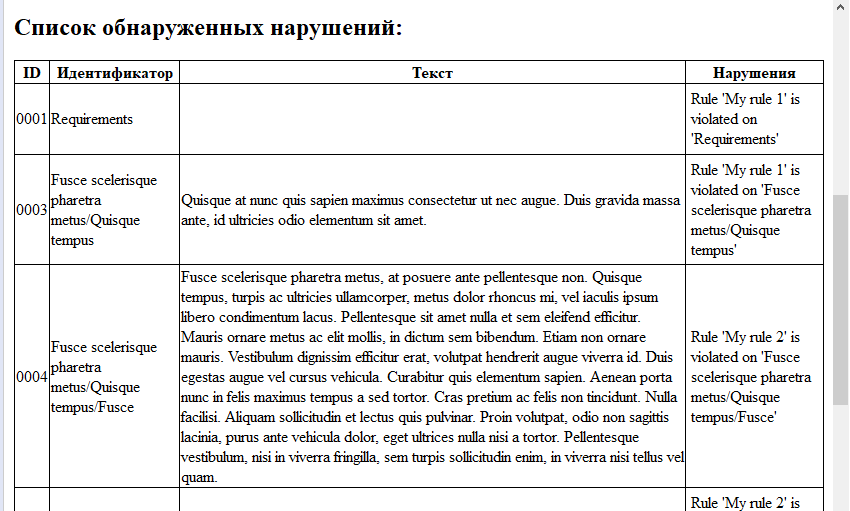
Для создания отчета 'Проверка правил оформления' нужно:
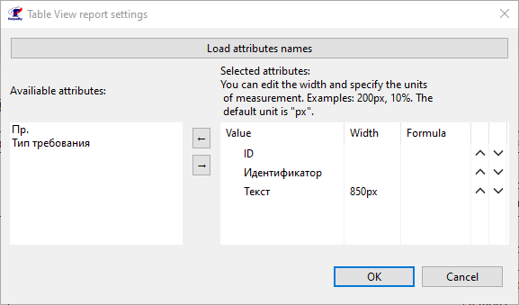
Далее сгенерировать сам отчет (см. Генерация отчета).
Для работы с шаблоном отчета 'Анализ покрытия требований' должен быть установлен плагин 'Requality Coverage Tools' (см. Requality Coverage Tools).
Шаблон отчета 'Анализ покрытия требований' предназначен для отображения информации о покрытии тестами элементов дерева требований, таких как тестовые ситуации и требования.
Отчет состоит из нескольких разделов:
Табличка с краткой информацией об отчете. В случае, если версия проекта, для которой генерируется отчет, была локально изменена после последней синхронизации с репозиторием, строка с номером версии в этой табличке будет иметь красный фон и к номеру ревизии добавится пометка 'с локальными изменениями'. Кроме того, в этой табличке появится раздел 'Локальные отличия', в котором будут перечислены отличия между локальной версией и ревизией с сервера.
Таблица со статистической информацией о количестве покрытых и непокрытых узлов. Отображает количество требований, тестовых узлов (если есть), количество листовых узлов и сколько из них покрыты и непокрыты на основании выбранного источника информации о покрытии.
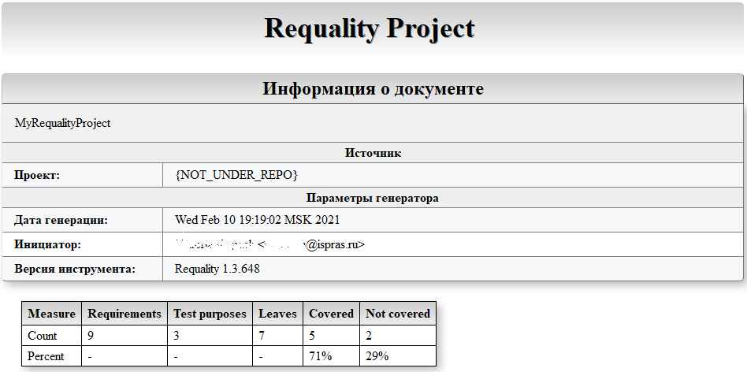
Далее в отчете представлен полный перечень требований проекта, в котором цветом отмечен статус покрытия для каждого узла: зеленым цветом отчемены полностью покрытые узлы (то есть все дочерние узлы данного узла покрыты), желтым - частично покрытые (покрыты не все дочерние узлы), красным - не покрытые (ни один дочерний узел не покрыт). Для каждого узла указан перечень привязанных к нему тестов, если они есть. Для каждого узла в отчете, в зависимости от настроек (см. ниже), может отображаться кнопка 'Add test', по нажатию которой вызывается диалог для добавления теста к данному узлу, что дает возможности сразу из отчета добавлять тесты к непокрытым узлам.
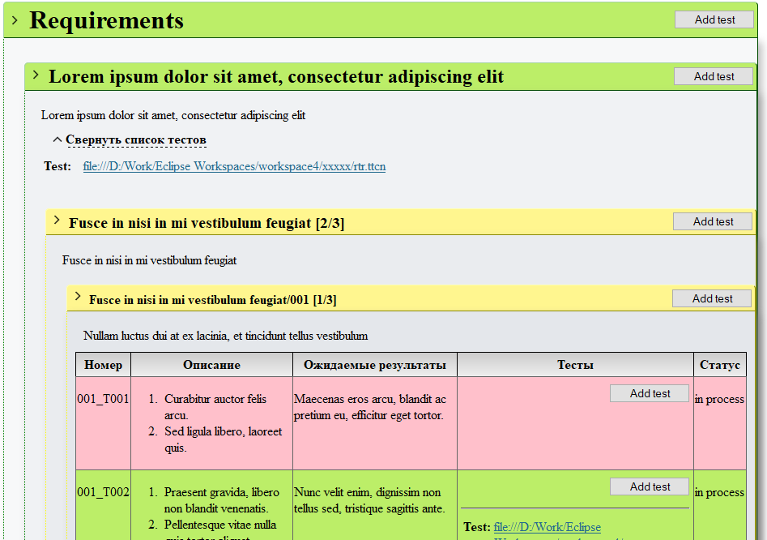
Для этого шаблона не применим флажок 'Generate report for related projects'.
Для построения отчета о покрытии требуется выбрать источник информации о покрытии. Для этого следует:
В окне 'Properties' настроек отчета в качестве шаблона выбрать шаблон 'Анализ покрытия требований'.
В окне 'Properties' настроек отчета нажать на появившуюся кнопку 'Update Coverage Source'.
Отобразится список доступных источников. Требуется выбрать один из представленных:
'From File' позволяет выбрать в качестве источника о покрытии файл определенного формата. При выборе этого пункта будет предложено выбрать требуемый файл (cм. 'Файл с информацией о покрытии').
'Coverage By Test Purposes' позволяет указать в качестве покрывающих элементов тестовые ситуации.
'Coverage By Projects' представляет собой механизм поиска информации о покрытии в файлах с определенным расширением, доступном в текущем Workspace. Для работы с данным источником потребуется определить:
Проекты, в которых будет производиться поиск файлов.
Расширение искомых файлов (по умолчанию - '.ttcn ').
Регулярное выражение для поиска идентификаторов требований и тестовых ситуаций (по умолчанию '(/Requirements.*)|@requirement (.*)'). Следует заметить, что Requality предполагает, что найденное значение будет находиться в первой возвращаемой группе. Подробнее с построением регулярных выражений можно ознакомиться в документации к регулярным выражениям на языке Java.
Помимо этого можно указать дополнительные настройки, нажав кнопку 'Open Settings'. В открывшемся окне можно:
Установить флажок 'Hide buttons', чтобы в отчете не отображались кнопки 'Add Test' - кнопки для создания тестов из отчета.
В поле 'Test identifier formula' указать формулу вида JavaScript, которая влияет на формат отображения тестов в отчете. При этом можно использовать ключевые слова:
'path' (указано в формуле по умолчанию) - полный путь к тесту от корня проекта, в котором он лежит,
'lastSegment' - имя и расширение содержащего тест файла,
'one' - имя узла, к которому привязан этот тест.
Пример результата работы формулы отображается ниже в поле 'Testing output'.
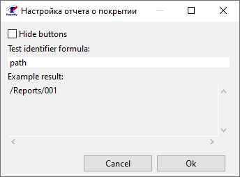
Далее сгенерировать сам отчет (см. Генерация отчета).
Данная функциональность доступна в версии Requality Enterprise Edition.
Шаблон отчета 'Генерация документов (ODT)' предназначен для выгрузки содержимого требований и текстовых узлов в открытый документальный формат OpenDocument Text (ODT). Документ формируется в структуре, определённой заранее в шаблоне отчёта. Сгенерированный отчёт содержит ссылку на скачивание сформированного документа.
Перед ссылкой на скачивание документа размещается информационная таблица проекта.
В результате отчет состоит из нескольких разделов:
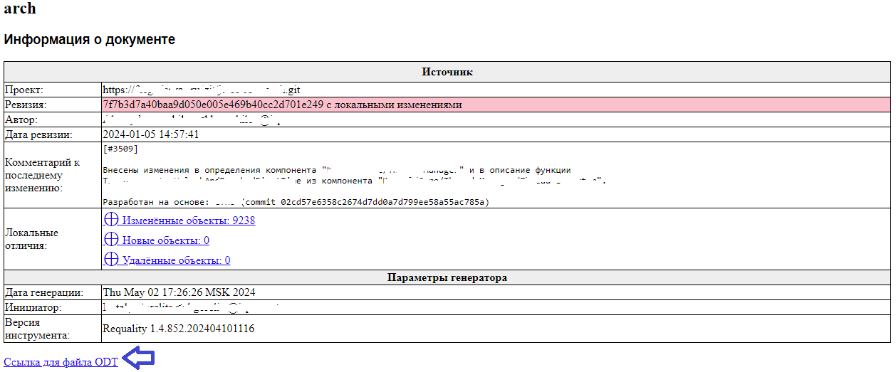
Для создания отчёта 'Генерация документов (ODT)' нужно:
Обычным способом создать узел настроек отчёта (см. Создание настроек отчета).
В параметрах узла настроек отчёта выбрать шаблон 'Генерация документов (ODT)' (см. Редактирование параметров настроек отчета).
Заполнить атрибуты, необходимые для генерации титульного листа и колонтитулов создаваемого документа (см. Настройка атрибутов шаблона отчёта для генерации ODT).
Далее сгенерировать сам отчёт (см. Генерация отчета).
Нажать на указанную в конце отчёта ссылку 'Ссылка для файла ODT'.
Сформированный файл ODT при настройках узла отчёта по умолчанию будет построен согласно следующей структуре:
При правильной настройке атрибутов первые два листа документа будут выглядеть подобным образом:
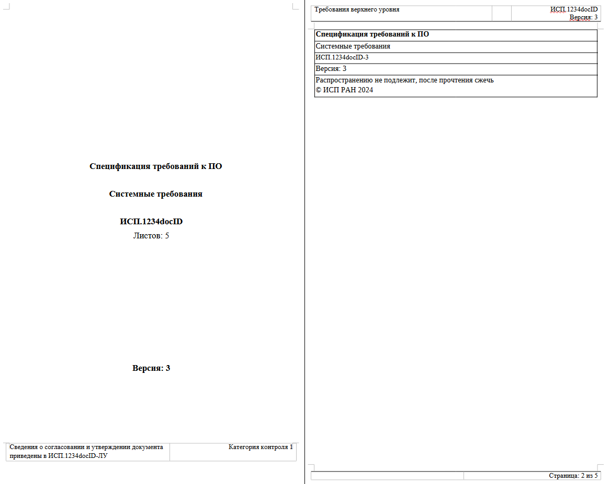
После того, как отчёт в документе формата ODT будет сгенерирован и скачан, необходимо обновить оглавление (содержание) документа с помощью следующих шагов:
Открыть документ в редакторе (например, LibreOffice Writer),
Перейти на страницу, где начинается оглавление,
На оглавлении правой кнопкой мыши вызвать контекстное меню,
Выбрать пункт, соответствующий обновлению оглавления (в LibreOffice Writer это 'Обновить указатель'),
Убедиться, что в оглавлении успешно проставились номера страниц для перечисленных разделов,
Сохранить обновлённый документ.
Информация для наполнения шаблона отчёта 'Генерация документов (ODT)' берется из трёх источников:
узел с настройками генерации отчёта (далее обозначен как 'отчёт'),
выбранное целевое требование (далее обозначено как 'требование'),
корневой узел '/Requirements' (далее обозначен как 'корень').
При работе в многотомном режиме (см. Генерация многотомных документов) в качестве требования должно быть выбрано корневое требование интересующего тома, например, «Том 1. Базовые положения».
Выбор целевого требования осуществляется следующим образом:
В настройках отчёта необходимо нажать на кнопку 'Browse…' справа от поля 'Root requirement:':
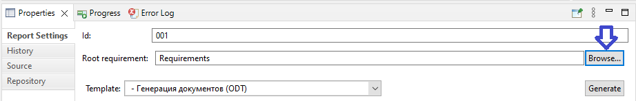
В появившемся окне выбора требования указать нужное требование, по поддереву которого будет строиться отчёт, после чего нажать на кнопку 'ОК':
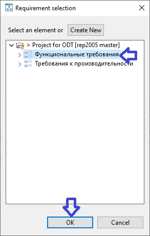
Убедиться, что в поле 'Root requirement:' отображается выбранное целевое требование:
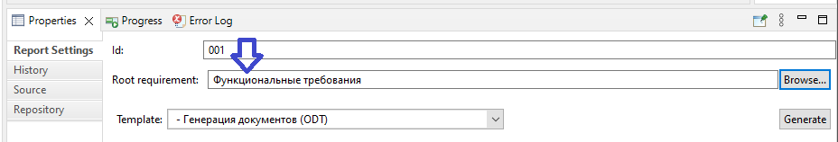
В таком случае при генерации отчёта ODT будет сформирован документ, включающий только требования, находящиеся в указанном подразделе.
На уровне корня задаются следующие свойства (атрибуты):
На уровне выбранного требования задаются следующие свойства (атрибуты):
Для работы с шаблоном отчета 'Анализ покрытия выделенных требований' должен быть установлен плагин 'Requality Coverage Tools' (см. Requality Coverage Tools).
Шаблон отчета 'Анализ покрытия выделенных требований' предназначен для отображения информации о покрытии тестами фрагментов документа. Работа с шаблоном 'Анализ покрытия выделенных требований' аналогична работе с шаблоном 'Анализ покрытия требований', однако в результате будет получен документ с размеченными фрагментами, где для каждого фрагмента цветом указано, покрыт он или нет.
Для этого шаблона не применим флажок Generate report for related projects.
Для построения отчета о покрытии требуется выбрать источник информации о покрытии. Для этого следует :
В окне 'Properties' настроек отчета в качестве шаблона выбрать шаблон 'Анализ покрытия выделенных требований'.
В окне 'Properties' настроек отчета нажать на появившуюся кнопку 'Update Coverage Source'.
'From File' позволяет выбрать в качестве источника о покрытии файл определенного формата. При выборе этого пункта будет предложено выбрать требуемый файл (cм. 'Файл с информацией о покрытии').
'Coverage By Test Purposes' позволяет указать в качестве покрывающих элементов тестовые ситуации.
'Coverage By Projects' представляет собой механизм поиска информации о покрытии в файлах с определенным расширением, доступном в текущем Workspace. Для работы с данным источником потребуется определить:
Проекты, в которых будет производиться поиск файлов.
Расширение искомых файлов (по умолчанию - '.ttcn ').
Регулярное выражение для поиска идентификаторов требований и тестовых ситуаций (по умолчанию '(/Requirements.*)|@requirement (.*)'). Следует заметить, что Requality предполагает, что найденное значение будет находиться в первой возвращаемой группе. Подробнее с построением регулярных выражений можно ознакомиться в документации к регулярным выражениям на языке Java.
Далее сгенерировать сам отчет (см. Генерация отчета).
Шаблон отчета 'Настраиваемая визуализация связей между требованиями' предназначен для отображения информации о наличии связей-ссылок (определенного типа) между элементами в выбранном фрагменте каталога требований.
Отчет состоит из двух страниц:
На первой странице находится информация об исходящих ссылках (то есть отображаются элементы, на которые ссылается целевой элемент).
На второй странице находится информация о входящих ссылках (то есть отображаются элементы, которые ссылаются на целевой элемент).
Вид отчета по шаблону 'Настраиваемая визуализация связей между требованиями' изображен на рисунке ниже:
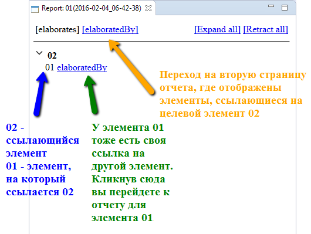
По умолчанию открывается первая страница, для перехода на вторую следует нажать на имя входящей ссылки (задается в свойствах проекта). Для обратного перехода к первой странице следует нажать на имя исходящей ссылки, обозначенное как 1.
Если в настройках отчета был включен механизм сворачивания (по умолчанию он включен), то на страницах отчета будут отображаться кнопки для сворачивания и разворачивания всех строк (3) и для каждой строки с именем исходного элемента (такой как 4) слева будет показана стрелочка — статус, обозначающая — свернуты ли элементы на которые ведет ссылка (5).
Цифрами 4 и 6 обозначены результаты подстановки значений в 'primary' и 'secondary' шаблоны, описанные в пункте 3 ниже. При этом для 6 на второй странице есть информация о наличии входящей ссылки, потому имеется строка 'Backward_Уточняет' при нажатии на которую произойдет переход на вторую страницу.
Для построения отчета нужно выполнить следующие действия:
В окне 'Properties' настроек отчета в качестве шаблона выбрать шаблон 'Настраиваемая визуализация связей между требованиями'.
Далее необходимо задать вид связи, для которой требуется построить отчет. Для этого следует нажать на кнопку 'Open Settings'. После этого откроется окно настройки отчета в левой части которого (1,2 на рисунке ниже) будет отображаться список доступных видов связей (имен свойств типа 'REFERENCE'). Значение в скобках справа от наименования отношения — количество элементов каталога требований, для которых подобное отношение указано. Среди них требуется выбрать одно и нажать 'OK'.
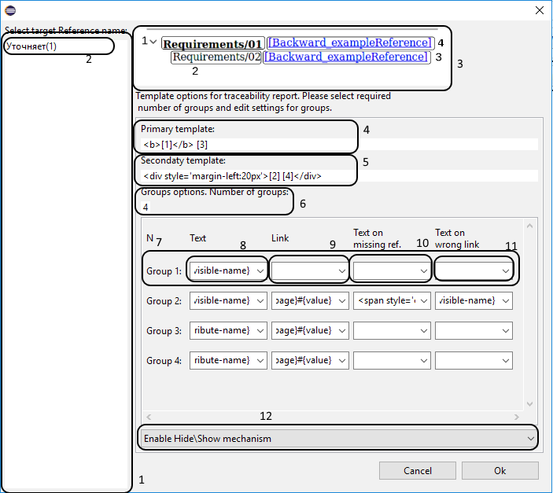
Опционально — имеется возможность детальной настройки отчета. Сгенерированный отчет будет состоять из строк двух видов — информации о том, что ссылается и на что ссылается. Цифрой 3 обозначен пример генерации, в котором можно видеть 2 строки — 'Requirements/01 [Backward...]' и 'Requirements/02 [Backward…]'. Первая строка содержит информацию об отношении, из которого исходит связь. Шаблон генерации строки обозначен цифрой 4 и имеет название 'Primary template'. Вторая строка — информация об элементе, на который указывает связь. Шаблон для генерации обозначен цифрой 5 и называется 'Secondary template'.
Определить группы в соответствии со следующими правилами:
Шаблоны указанных строк могут содержать html код и обозначения так называемых групп, о которых будет рассказано в дальнейшем. Группы обозначаются по своим номерам, заключенным в квадратные скобки, например '[1]' для первой группы. При генерации места указания групп будут заменены значениями, сгенерированными по правилам, описанным ниже. Цифрой 6 обозначено поле выбора количества групп. Ниже расположены настройки каждой из групп.
Итак, группа — обозначение некоторого генерируемого значения, которое в свою очередь может содержать ссылку. Например, можно использовать группу для отображения 'id' элемента с возможностью выбрать данный элемент в каталоге требований при нажатии. Более простой пример — текст 'Сайт' со ссылкой 'www.ru' создаст текст, при нажатии на который будет осуществляться переход на выбранную интернет страницу.
Пример описания группы обозначен цифрой 7 для группы номер 1. Стоит отметить, что несмотря на то, что поля для групп являются выпадающими списками, имеется возможность добавления любых html значений. При этом предложенные списком варианты содержат ряд доступных значений параметров отчета и его элементов (для 'primary' – исходного элемента, для 'secondary' – того, на который указывает ссылка).
Первая группа обозначена как 'Text(8)'. Данное значение будет показано по умолчанию, если не имеет место быть одна из двух ситуаций — отсутствие того, на что указывает ссылка (будет рассмотрено ниже), или отсутствие элемента каталога требований (для 'secondary'), для которых вместо 'Text' будут отображаться другие значения, рассмотренные ниже.
В поле 'Text'могут быть использованы параметры, указанные ниже:
{user-visible-name} — путь к элементу (для 'Primary' — первому, 'Secondary' — второму в отношении)
{attribute-name} — имя отношения
{value} — имя элемента (для 'Primary' — первого, 'Secondary' — второго в отношении)
{revert-attribute-name} — имя входящей ссылки (для второй страницы — исходящей)
{name-or-id} — имя целевого элемента ссылки или его 'id', если имя отсутствует
{this-page} — название текущей страницы ('trace' для 1, 'tracerev' для 2)
{next-page} — название другой страницы ('tracerev' для 1, 'trace' для 2)
Доступны свойства как настроек отчета (через выражение «{#имя}»), так и свойств элемента (используя {@имя}).
Второе поле группы, обозначенное как 'Link(9)', содержит ссылку, по которой будет осуществляться переход при нажатии на группу. Для этого поля доступны все параметры, доступные в 'Text', но также имеется специальный параметр '{requality-cnf}' - ссылка для переключения выделения в 'Requality Explorer'.
Третье и четвертое поля (10 и 11) содержат текст, который будет отображаться вместо группы при отсутствии элемента каталога требований ('on missing ref') и при отсутствии целевого элемента ссылки (только для ссылок на якорь в текущем документе, стандартные якори будут рассмотрены ниже). Для этих полей дополнительно доступен '{skip-line}' для пропуска соответствующей генерированной по шаблону ('Primary' или 'Secondary') строки.
Последний из элементов окна настроек 'Настраиваемая визуализация связей между требованиями' отчета — настройка возможности сворачивать 'Secondary' строки при нажатии на 'Primary'. По умолчанию опция активна, и механизм скрытия 'Secondary' строк активирован.
Упомянутые выше якори представляют собой конструкции вида '<a id=”путь к элементу”/>', позволяющие использовать в группах ссылки вида 'имя_страницы#путь_к_элементу' для возможности перехода на выбранный элемент при нажатии на группу. При отсутствии якоря с нужным идентификатором на месте группы отображается значение, сгенерированное по полю 'text on wrong link'.
Далее сгенерировать сам отчет (см. Генерация отчета).
Для работы с шаблоном отчета 'Прогресс по проекту' должен быть установлен плагин 'Requality Coverage Tools' (см. Requality Coverage Tools), а также в зависимости от используемой системы управления версиями плагин 'Requality GIT Connector' (для GIT, см. Requality GIT Connector).
Шаблон отчета 'Прогресс по проекту' предназначен для отображения статистической информации о проекте Requality, взятой из используемой системы управления версиями.
Для этого шаблона не применим флажок Generate report for related projects.
Для построения отчета со статистикой нужно выполнить следующие действия:
В окне 'Properties' настроек отчета в качестве шаблона выбрать шаблон 'Прогресс по проекту'.
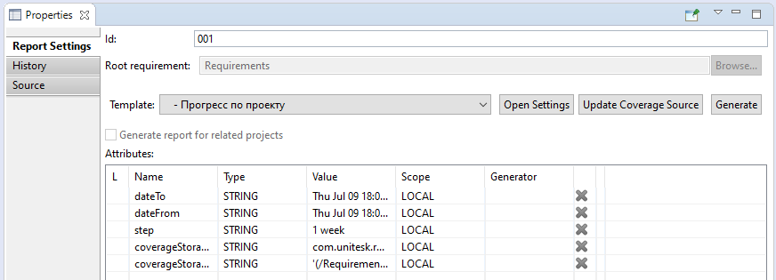
Опционально можно выбрать источник информации о покрытии. Например, добавить в отчет в том числе покрытие тестовыми ситуациями или данными из какого-либо другого проекта или внешнего файла. Для этого в окне 'Properties' настроек отчета нажать на кнопку 'Update Coverage Source' и выбрать источник, действия аналогичны действиям для построения отчета по шаблону 'Анализ покрытия требований'.
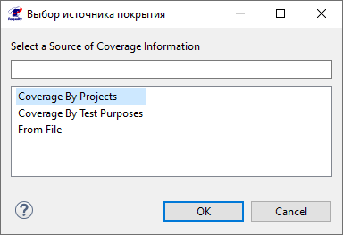
Также можно указать дополнительные параметры. Для этого в окне Properties настроек отчета нажать на кнопку 'Open Settings' и в открывшемся окне выбрать либо пункт 'Progress for selected dates', либо пункт 'Progress for all available dates'. В случае выбора 'Progress for selected dates' потребуется вручную указать даты начала и окончания интересующего периода и минимальный шаг по времени между ревизиями. Шаг записывается в формате, например, '1 week 2 day' или '5 month'. Также можно использовать не полные названия периодов, а короткие: 'd' вместо 'day', 'w' - 'week', 'm' - 'month', 'y' - 'year' (например, '1 w 2 d'). Для закрытия окна настроек нужно нажать кнопку 'OK'.
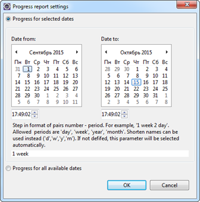
Далее сгенерировать сам отчет (см. Генерация отчета).
Чтобы удалить настройки отчета, выберите этот узел в 'Requality Explorer', вызовите правой кнопкой контекстное меню и выберите пункт 'Delete Report Settings'.
Вы также можете воспользоваться горячей клавишей 'Delete' для удаления настроек отчета.
В появившемся окне подтвердите удаление настроек отчета, нажав кнопку 'OK'.
Сгенерировать отчет можно двумя способами:
Выберите нужные настройки отчета в 'Requality Explorer', вызовите контекстное меню и выберите в нем пункт 'Generate report'.
Или выберите нужные настройки отчета в 'Requality Explorer' и в его 'Properties view' на вкладке 'Report Settings' нажмите кнопку 'Generate'.
Отчет создается рядом (на том же уровне иерархии) с узлом настроек отчета, на котором он был сгенерирован.
В сгенерированном отчете в списке атрибутов автоматически создается атрибут 'date', содержащий информацию о дате и времени генерации отчета.
Выберите нужный отчет в 'Requality Explorer' и дважды кликните по нему.
Обратите внимание, в окне 'Properties' откроются параметры, по которым был сгенерирован отчет. Однако изменить можно только идентификатор отчета.
Для переноса файла со сгенерированным отчетом в удобное место в файловой системе нужно вызвать в 'Requality Explorer' на отчете пункт контекстного меню 'Export Report', выбрать в открывшемся диалоговом окне путь к нужной директории и нажать 'OK'. Отчет будет сохранен в выбранную директорию.
Чтобы удалить отчет, выберите его в 'Requality Explorer', вызовите правой кнопкой контекстное меню и выберите пункт 'Delete Report'.
Вы также можете воспользоваться горячей клавишей 'Delete' для удаления отчета.
В появившемся окне подтвердите удаление отчета, нажав кнопку 'OK'.
Для удобства работы с отчетами внутри узла 'Reports' можно создавать папки и размещать отчеты в них.
Для создания папки отчетов в окне 'Requality Explorer' выделите узел 'Reports' или любую другую вложенную папку, в контекстном меню выберите 'Create Folder'.
В открывшемся окне в поле 'Enter folder name' введите желаемое имя папки.
Имя не должно повторять имена папок, находящихся на том же уровне иерархии. В противном случае появится предупреждающее об этом сообщение, и продолжать процесс создания папки с таким именем будет невозможно.
Если вы ввели корректное имя, нажмите кнопку 'OK'. Папка с указанным именем будет создана в 'Requality Explorer' на выбранном уровне иерархии.
Теперь вы можете создавать настройки отчетов и генерировать отчеты в новой папке.
Для удаления папки отчетов выберите эту папку в окне 'Requality Explorer'.
Правой кнопкой мыши вызовите контекстное меню, выберите в нем пункт 'Delete Folder'.
Для удаления папки вы также можете использовать горячую клавишу 'Delete'.
После этого появится окно для подтверждения удаления папки. Обратите внимание, что удаление папки повлечет за собой удаление всех находящихся в ней настроек отчетов и отчетов. Если вы уверены в правильности удаления выбранной папки, нажмите в окне подтверждения кнопку 'OK' для продолжения процесса удаления.
Название папки отчетов — единственный параметр папки отчетов, который может быть отредактирован. Он находится на вкладке 'Main' окна 'Properties'. Чтобы изменить название папки отчетов, нужно выполнить следующие действия:
Щелкните по нужной папке отчетов в 'Requality Explorer', в окне 'Properties' откроются ее свойства.
На вкладке 'Main' поле 'Id' отредактируйте название папки.
Кликните на какой-нибудь другой объект или другое поле. Измененное название сохранится.
Комментарий может быть добавлен к требованию, тестовой ситуации и текстовому узлу.
Комментарий можно создать несколькими способами: из 'Requality Explorer', из 'UniEditor' и из 'Review'. Комментарии можно создавать как с нуля, так и из шаблонов комментариев текущего проекта Requality.
Из 'Requality Explorer'. Выберите узел, к которому нужно добавить комментарий, назовем такой узел целевым. Вызовите правой кнопкой контекстное меню. Если в проекте есть шаблоны комментариев, тогда в контекстном меню будет отображаться пункт 'New → Comment...' с выпадающим списком доступных шаблонов. Из этого списка можно создать комментарий по любому шаблону комментария текущего проекта, а также можно создать пустой комментарий. Если в проекте нет шаблонов, то для создания комментария будет доступен только пункт меню 'New → Comment', выбор которого приведет к созданию пустого комментария. После выполнения одного из перечисленных действий у целевого узла появится новый комментарий.
Из 'UniEditor'. Выберите узел, к которому нужно добавить комментарий. Затем можно добавить комментарий одним из следующих способов:
Навести указатель мыши на правый верхний угол выбранного узла и из раскрывшегося меню выбрать пункт 'Add new Comment'.
Навести указатель мыши на правый верхний угол редактора и выбрать аналогичный пункт из выпадающего меню.
С клавиатуры, нажав 'Alt+C'.
С клавиатуры, нажав 'Ctrl+D', после этого в правом верхнем углу редактора откроется выпадающее меню с подсказками, оттуда можно выбрать пункт меню как описано в п.2, либо нажав клавишу 'C'.
Если в проекте выбран 'активный шаблон', то в пунктах меню будет отображаться его название, то есть пункт меню будет называться не 'Add new Comment', а, например, 'Add New Comment - basic', где 'basic' – это имя шаблона.
Пункт 'Add new Comment' доступен также и для узла-комментария, однако в этом случае новый комментарий добавится не как ребенок, а как сосед к выбранному комментарию.
После выполнения указанных действий откроется окно редактирования комментария.
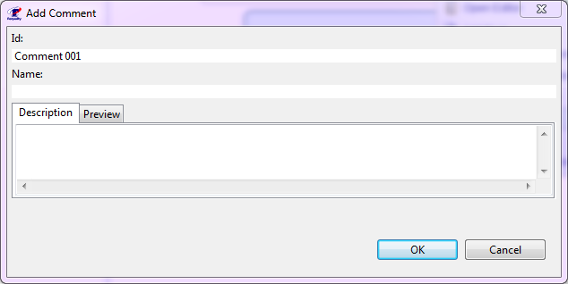
Если был выбран 'активный шаблон', то все поля комментария, кроме поля 'Id', будут заполнены из этого шаблона. Поле 'Id' будет вычисляться следующим образом:
Если создается первый дочерний комментарий, то у него будет идентификатор '001'.
Если создается не первый дочерний комментарий, то система определит последний идентификатор комментария на том же уровне, инкрементирует его и присвоит новому комментарию.
Из 'Review'. Действия аналогичны действиям, описанным для редактора 'UniEditor' в предыдущем пункте.
Комментарий также можно создать путем копирования уже существующего комментария.
Из 'Requality Explorer'. Копирование комментария осуществляется с помощью пункта меню 'Copy'. Вставка скопированного комментария осуществляется с помощью пунктов меню 'Paste into' (для добавления скопированного комментария как ребенка к целевому узлу) или 'Paste near' (для добавления скопированного комментария как соседа к целевому узлу). Скопированный узел вставится в выбранное место дерева требований. Обратите внимание, если в качестве целевого узла был выбран комментарий, то копируемый комментарий может быть вставлен только как сосед к целевому узлу. Также для копирования узла можно использовать горячие клавиши 'Ctrl+c' и 'Ctrl+v', при этом копирование будет происходить по принципу 'Paste near'.
Из 'UniEditor' и 'Review'. Откройте соответствующий редактор. Кликните один раз по комментарию, который хотите скопировать. Он станет выделенным. Нажмите сочетание клавиш 'Ctrl+c'. Затем так же кликните на требование 'Requirements' или любой его дочерний узел, назовем его целевым, и нажмите сочетание клавиш 'Ctrl+v'. Откроется редактор комментария, где вы можете отредактировать параметры комментария. Сделайте это и нажмите 'OK'. Если в качестве целевого узла был выбран комментарий, то копируемый комментарий вставится как сосед к целевому узлу, в остальных случаях - комментарий вставится как ребенок.
Чтобы отредактировать параметры комментария, щелкните по нужному комментарию в 'Requality Explorer', в окне 'Properties' откроются свойства комментария.
Далее рассмотрены только те параметры комментария, которые можно изменить вручную.
Name
Имя комментария при создании комментария по умолчанию не задано.
Имя может не быть уникальным.
Редактируйте имя напрямую в данном поле.
Если имя не задано, то комментарий идентифицируется по идентификатору, в противном случае - по имени.
Author
По умолчанию установлено имя пользователя, указанное при регистрации в Eclipse.
Редактируйте имя автора прямо в данном поле.
Поле для текста комментария
По умолчанию пусто.
Редактируйте текст комментария прямо в данном поле.
Чтобы посмотреть историю ревизий комментария, щелкните по нужному комментарию в 'Requality Explorer', после этого в окне 'Properties' откройте вкладку 'History'. Работа с этой вкладкой аналогична работе с соответствующей вкладкой у требования (см. История ревизий требования).
Комментарий можно удалить из 'Requality Explorer', для этого нужно выбрать его в этом окне, вызвать правой кнопкой контекстное меню и выбрать пункт 'Delete Comment'. В редакторах 'UniEditor' и 'Review' комментарий можно удалить из выпадающего меню узла либо из выпадающего меню в правом верхнем углу редактора с помощью пункта меню 'Delete Comment'. Также для удаления комментария можно воспользоваться горячей клавишей 'Delete'. После одного из указанных действий нужно подтвердить удаление комментария в появившемся окне, нажав кнопку 'OK'.
В Requality используется несколько способов идентификации узлов дерева требований помимо параметра ID. Это дает возможность более гибкого обращения к узлам с учетом возможности их перемещения, удаления или замены.
SeqID - автогенерируемый идентификатор узла дерева требований (см. Автогенерируемый идентификатор узла (SeqID)), является уникальным в рамках одного проекта, принадлежит только одному конкретному узлу на протяжении всего жизненного цикла проекта. Механизм использования автогенерируемых идентификаторов может быть включен и настроен в настройках проекта (см. Настройка автогенерируемых идентификаторов в проекте Requality). Подробно о принципах его работы описано в разделе Уникальные идентификаторы узлов дерева требований.
UserVisibleID - пользовательский идентификатор узла, в котором используется имя узла (см. UserVisibleId, UVId).
FullName - полный путь к узлу, содержащий информацию о всех его родителях, начиная с корневого узла Requirements (см. Полный путь к узлу (FullName)).
UUID - cистемный идентификатор узла (внутренний идентификатор, невидимый пользователю) (см. UUId).
В Requality существует возможность автоматической установки уникальных идентификаторов ('SeqID') для всех узлов дерева требований (требований, текстовых узлов, тестовых ситуаций и т.д.) - автогенерируемых идентификаторов узла. Данный механизм по умолчанию не активирован в проекте Requality, его можно включить в настройках проекта (см. Настройка автогенерируемых идентификаторов в проекте Requality). Механизм работает в соответствии со следующими принципами:
Уникальный идентификатор узла реализован как один из атрибутов узла и отображается наравне с другими атрибутами в таблице атрибутов на вкладке 'Properties'.
В настройках проекта можно указать имя для автогенерируемого идентификатора, по умолчанию им является 'ForeignID'. Так же можно указать префикс, который будет отображаться в значении атрибута перед его числовой частью, по умолчанию он не назначен.
После включения механизма автогенерируемых идентификаторов у всех уже существующих узлов дерева требований, начиная с корневого узла 'Requirements', появится соответствующий атрибут, и все новые создаваемые узлы будут получать его автоматически.
Если до включения механизма у некоторого узла уже был атрибут с таким именем, то этот атрибут станет уникальным идентификатором, а его значение сохранится за данным узлом как уникальное.
Исключением являются ситуации, когда атрибут с таким именем до включения механизма имел тип, отличный от 'INT', или в разных узлах атрибуты с таким именем имели совпадающие значения. В таком случае механизм автогенерируемых идентификаторов не будет включен, при попытке сохранения таких настроек появится предупреждение и проблемные узлы будут помечены значком ошибки, настройки сохранены не будут. Потребуется внести исправления, которые обеспечат правильный тип и уникальность значений такого атрибута до включения механизма, и после этого снова указать желаемые настройки механизма автогенерируемых идентификаторов.
Все автогенерируемые идентификаторы уникальны. После удаления узла его 'SeqID' никогда не будет присвоен ни одному из узлов дерева требований данного проекта, пока механизм автогенерируемых идентификаторов включен.
При отключении механизма автогенерируемых идентификаторов все 'SeqID' будут удалены и больше не будут автоматически появляться у новых узлов.
ВНИМАНИЕ! При отключении механизма автогенерируемых идентификаторов будут удалены все такие идентификаторы, даже те, которые были установлены пользователем до включения данного механизма.
ВНИМАНИЕ! Если отключить механизм автогенерируемых идентификаторов и включить снова, все значения автогенерируемых идентификаторов будут назначаться заново без учета того, какие они были при предыдущем включении данного механизма.
Элементы дерева проекта Requality могут быть отсортированы тремя способами: 'By Locations' (по фрагментам), 'By Names' (по именам) и 'By Index' (по индексам). По умолчанию способ сортировки - 'By Locations'.
By Locations - требования сортируются по расположению в документе привязанных к ним фрагментов. Если требованию принадлежит несколько фрагментов, то порядок сортировки определяется по расположению первого фрагмента. Требования, не содержащие фрагментов, располагаются в конце отсортированного списка и сортируются по имени. В том случае, если фрагменты требований расположены в нескольких разных документах проекта, сортировка зависит от имен документов (документы сортируются по именам).
By Names - требования сортируются по именам (сначала - в порядке возрастания, потом - по алфавиту). Если у требований не указаны имена или если имена совпадают, то сортировка происходит по Id (см. Параметры требования).
By Index - требования сортируются по индексам. Под индексом понимается установленная пользователем позиция требования. При данном способе сортировки появляется возможность установить позицию требования путем переноса требований с удерживаемой клавишей 'Shift' в 'Requality Explorer'. Требование должно быть перенесено на тот узел дерева, после которого оно должно в дальнейшем размещаться. Так, для каталога, изображенного на рисунке:
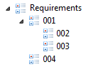
перенос требования '004' на требование '002' с удерживаемой клавишей 'Shift' приведет к порядку, изображенному на следующем рисунке:
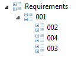
Отдельно стоит отметить опцию 'Sort elements types separately'. В активированном состоянии данная возможность предполагает, что элементы каталога требования будут отсортированы независимо друг от друга. При деактивации опции различные типы элементов будут отсортированы без разделениях их по типу. Опция по умолчанию активна, но при работе со способом сортировки 'By Index' рекомендуется ее деактивировать.
Изменение настроек сортировки доступно в свойствах проекта Requality (см. Настройка сортировки в проекте Requality).
В проекте Requality различные узлы дерева требований проекта могут быть связаны между собой однонаправленными связями-ссылками. Причем связаны могут быть узлы из разных проектов, если эти проекты расположены в одном workspace. Тот узел, который ссылается, называется ссылающимся узлом. Тот узел, на который ссылка ведет, называется целевым узлом.
Существует отдельный вид ссылок для терминов, они обладают несколько отличающимся от обычных ссылок способом указания. Подробно информацию о них можно найти в разделе Термины и их использование.
Ссылка указывается в параметрах ссылающегося узла. Она отображается в его таблице атрибутов как атрибут типа 'REFERENCE', в качестве значения которого указан путь к целевому узлу. Имя этого атрибута – это имя исходящей ссылки, оно может быть любым. Входящая ссылка не указывается в таблице атрибутов у целевого узла, но ей можно указать свое имя (см. Редактирование имени входящей ссылки). Но все ссылки – и входящие, и исходящие – можно посмотреть для любого узла в окне 'Requality Links Explorer' (см. Просмотр ссылок узла дерева требований).
Создать ссылку между узлами дерева требований можно одним из двух способов:
Добавить ссылку на целевой узел с помощью ручного задания атрибута типа 'REFERENCE' в таблице атрибутов у ссылающегося узла в окне 'Properties'. При этом оба узла – целевой и ссылающийся – должны уже существовать в дереве требований. Также существует возможность создать сразу несколько исходящих ссылок с одинаковым именем из одного ссылающегося узла на несколько разных целевых узлов с помощью атрибута-списка, содержащего список атрибутов типа 'REFERENCE'.
Добавить ссылку на целевой узел автоматически с помощью кнопки '0,1,*' в меню окна 'Requality Explorer'. При этом существует возможность создать новый ссылающийся узел в процессе создания ссылки. Целевой узел в любом случае должен уже существовать в дереве требований. Также при таком способе есть возможность создать одновременно несколько ссылок из разных ссылающихся узлов на один целевой узел. Этот способ не работает для создания межпроектных ссылок.
Далее подробно рассматриваются оба способа.
Создание одной ссылки.
Выделить в окне 'Requality Explorer' узел, который будет ссылающимся.
В окне 'Properties view' на вкладке 'Main' в таблице 'Attributes' создать новый атрибут с произвольным именем и указать этому атрибуту тип 'REFERENCE'.
Затем кликнуть в ячейке 'Value' и нажать на появившуюся кнопку с двумя точками. Откроется окно 'Link editor' для выбора целевого узла ссылки.
В 'Link editor' будет отображаться дерево требований проекта и, при наличии других проектов в том же workspace, их деревья требований. Здесь требуется выбрать требование, на которое должна идти ссылка, то есть целевое требование. Радиальные переключатели в верхней части окна позволяют переключаться между различными способами записи пути к целевому узлу:
'By element' — ссылка записывается по внутреннему системному идентификатору узла.
'By path' — ссылка записывается по полному пути от корня дерева требований к целевому узлу (cм. 'Полный путь к узлу').
'By UVName' — ссылка записывается по полному пути с учетом 'UserVisibleId'.
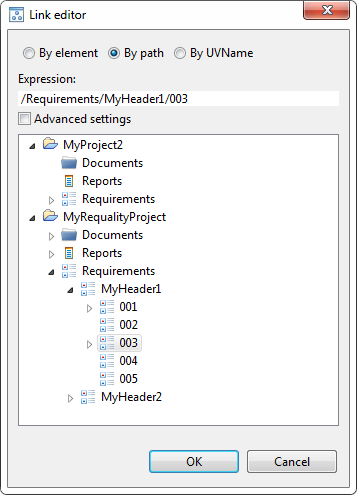
Путь к выбранному узлу отображается в поле 'Expression'. Там же его можно отредактировать вручную при необходимости.
Внимание! При выборе 'By element' в случае изменения положения узла в дереве требований ссылка продолжит ссылаться именно на этот узел. При выборе двух других способов записи ссылки в случае перемещения узла ссылка окажется нерабочей. Если вместо этого узла будет подставлен другой с таким же путем к нему, то ссылка будет ссылаться уже на него. Поэтому рекомендуется для однозначности использовать способ 'By element'.
Внимание! Нужно иметь в виду, что межпроектная ссылка начинается с имени проекта, в котором находится целевой узел, и двух двоеточий. То есть имеет вид: '<project_name>::<node_path>' где '<project_name>' - имя проекта, где находится целевой узел, а '<node_path>' - путь к узлу в этом проекте.
После выбора целевого узла в 'Link editor' нужно нажать 'OK'. В результате в окне 'Properties view' в таблице 'Attributes' появится атрибут-ссылка на выбранный целевой узел.
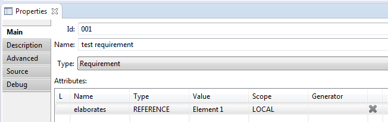
Создание сразу нескольких ссылок с одинаковым именем с помощью ручного задания атрибута типа 'LIST'.
Это частный случай создания ссылок с помощью атрибута типа 'REFERENCE'. Фактически в таблице создается атрибут-список, в качестве значений которого указываются ссылки. Все эти ссылки будут иметь одно имя — имя данного атрибута. Таким образом будет создано несколько ссылок с одинаковыми именами, исходящих из одного ссылающегося узла и входящих в разные целевые узлы. Для этого нужно:
Выделить в окне 'Requality Explorer' узел, который будет ссылающимся.
В окне 'Properties view' на вкладке 'Main' в таблице 'Attributes' создать новый атрибут с произвольным именем и указать этому атрибуту тип 'LIST'.
Для задания списка значений кликнуть по ячейке в столбце 'Value', затем кликнуть по кнопке с тремя точками, появившейся в ячейке справа. Откроется окно редактирования значений списка - 'List values editor'.
В окне 'List values editor' вверху в выпадающем списке выбрать тип 'REFERENCE'.
В окне 'List values editor' кликнуть на пустую строчку и нажать на появившуюся кнопку с двумя точками. Откроется окно 'Link editor' для выбора целевого узла ссылки.
Далее нужно выбрать целевой узел и нажать 'OK' (работа с 'Link editor' была описана в этом же разделе выше).
Далее, кликая по следующим пустым ячейкам в окне 'List values editor' и пользуясь окном 'Link editor', можно поочередно указать и другие целевые узлы. Для изменения положения узла в списке можно пользоваться стрелочками вверх-вниз справа, значение переместится, соответственно, выше или ниже. Для удаления значения кликните по этому значению и нажмите крестик справа в таблице, значение будет удалено. Для завершения редактирования нажмите кнопку 'OK'. Для отмены редактирования нажмите кнопку 'Cancel'.
Внимание! Этот способ не работает для создания межпроектных ссылок.
Выбрать в 'Requality Explorer' целевой узел (узел, на который будут создаваться ссылки)
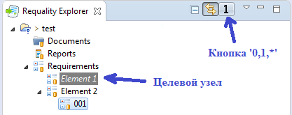
Нажать кнопку '0,1,*' в панели меню в верхней части окна 'Requality Explorer'. Кнопка '0,1,*' имеет три состояния: режим создания ссылок выключен (обозначается цифрой '0'), включен режим однократного создания ссылки (цифрой '1') и включен режим многократного создания ссылок (символом '*'). По умолчанию режим создания ссылок выключен и кнопка находится в состоянии '0'. Состояние кнопки изменяется при нажатии на нее, поэтому для выделения требования и перевода его в нужное состояние может потребоваться несколько раз нажать на эту кнопку, пока на ней не станет отображаться желаемый символ ('0', '1' или '*'). После включения режима создания ссылок (кнопка '0,1,*' находится в состоянии '1' или '*') при переносе фокуса в 'Requality Explorer' на другой (нецелевой) узел целевой узел будет выделен в дереве требований серым цветом и косым шрифтом).
Следующий этап включает в себя непосредственный выбор ссылающихся узлов или их создание:
Для выбора ссылающегося узла среди уже существующих нужно кликнуть по желаемому узлу, вызвать контекстное меню и выбрать в нем пункт 'Add reference to…'.
Для создания нового ссылающегося узла нужно просто создать его обычным способом. Например, создать новый узел любого типа в 'Requality Explorer' или создать требование, выделив фрагмент в документе.
При этом каждый выбранный с помощью 'Add reference to…' или новый созданный узел будет получать ссылку на целевой узел до тех пор, пока активна функция создания ссылок (то есть кнопка '0,1,*' находится в состоянии '1' или '*'). И этот узел будет получать атрибут типа 'REFERENCE', указывающий на целевой узел.
Если целевой узел был выделен в режиме однократного создания ссылки (состояние '1' у кнопки '0,1,*'), то после выбора/создания одного ссылающегося узла, режим создания ссылок выключится (кнопка '0,1,*' перейдет в состояние '0'). Если был выбран режим многократного создания ссылок (состояние '*' у кнопки '0,1,*'), то все создаваемые узлы будут ссылающимися. Для того, чтобы отключить режим создания ссылок, нужно перевести кнопку '0,1,*' в состояние '0'.
Стоит отметить, что для такого способа создания ссылок имя ссылочного атрибута (атрибута типа 'REFERENCE') задано по умолчанию в настройках проекта и может быть изменено. Для этого из контекстного меню текущего проекта открыть окно 'Properties'. В нем в левой части выбрать 'Requality → Requality References', тогда в правой части в разделе 'References settings' можно изменить значение имени атрибута, указав другое имя в поле 'Default reference name'. По умолчанию имя ссылок — 'elaborates'.
Также стоит отметить, что для разных проектов могут быть выделены разные целевые узлы, и что режим создания ссылок сохраняется в рамках одной рабочей сессии. После закрытия Eclipse режим создания ссылок отключается.
Одна и та же ссылка между двумя узлами является для ссылающегося узла исходящей, а для целевого узла — входящей. Имя этой ссылки указывается как имя атрибута типа 'REFERENCE' в таблице атрибутов у ссылающегося узла. У целевого узла в таблице атрибутов эта ссылка не указывается. Однако ее можно увидеть, например, в окне 'Requality Links Explorer' (см. Просмотр ссылок узла дерева требований) для целевого узла в качестве входящей ссылки. И по умолчанию имя входящей ссылки целевого узла совпадает с именем исходящей ссылки соответствующего ссылающегося узла. Однако, для удобства просмотра имя входящей ссылки можно изменить вручную в настройках проекта (см. Настройка ссылок в проекте Requality). Рекомендуется давать значащие имена паре 'имя исходящей ссылки — имя входящей ссылки', чтобы была понятна связь между ними. Например, 'describes — described by'. Также стоит отметить, что в проекте Requality существуют предопределенные ссылки, для которых уже заданы и входящие, и исходящие имена. Все существующие в проекте имена ссылок и все заданные пары 'имя исходящей ссылки — имя входящей ссылки' можно посмотреть в настройках проекта (см. Настройка ссылок в проекте Requality).
Просмотреть входящие и исходящие ссылки узла дерева требований можно с помощью окна 'Requality Links Explorer'. Если данное окно не отображается в перспективе Eclipse, нужно открыть в главном меню 'Window → Show View → Other'. Затем развернуть пункт 'Requality' и выбрать 'Requality Links Explorer'.
В данном представлении отображаются узлы, связанные с выделенным в 'Requality Explorer' узлом. Все узлы, которые являются для выбранного узла целевыми, будут отображаться в этом окне в разделе 'Outcoming', также для них указывается имя атрибута, в котором задана ссылка. Все узлы, которые ссылаются на выбранный узел, будут отображаться в этом окне в разделе 'Incoming', также для них указывается имя входящей ссылки. Если дважды кликнуть по ссылке на узел, то фокус в 'Requality Explorer' перейдет на этот узел, и в представлении 'Requality Links Explorer' уже будет отображаться информация для него.
Для всех узлов указаны имена входящих или исходящих ссылок. Если ссылка относится только к одному узлу, то ее название будет указано перед именем этого узла. Если одна ссылка относится к нескольким узлам, то они будут сгруппированы под ее именем, то есть будет указано имя этой ссылки, а ниже перечислены имена узлов.
Если узел находится в другом проекте, то перед его именем будет указано имя его проекта, отделенное двумя двоеточиями.
В этом окне существует несколько кнопок для фильтрации отображаемых ссылок:
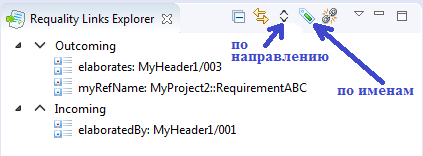
Кнопка с пиктограммой в виде стрелок вверх-вниз фильтрует ссылки по направлению связи. По умолчанию отображаются все связи, и входящие, и исходящие. Чтобы отображались только исходящие ссылки, нужно перевести эту кнопку в состояние 'стрелка вниз', для отображения только входящих ссылок — в состояние 'стрелка вверх'. Для изменения состояния этой кнопки требуется несколько раз кликнуть по ней до изменения ее пиктограммы на требуемую.
Кнопка с пиктограммой в виде зеленого ярлычка позволяет фильтровать узлы по именам атрибутов типа 'REFERENCE'. Для того, чтобы включить фильтр нужно нажать на эту кнопку и в открывшемся окне со списком всех имен атрибутов типа 'REFERENCE' текущего проекта выбрать один или несколько вариантов. Также можно выбрать вариант, чтобы отображались узлы с любыми именами атрибутов, для этого нужно выбрать верхний вариант.
Для удобного просмотра связанных ссылкой узлов в 'Requality Links Explorer' существует режим подсветки связанных узлов. При использовании этого режима можно увидеть узлы, которые связаны выбранной ссылкой, они подсвечены в окне 'Requality Explorer'. Для этого нужно:
Пример работы подсветки в ситуации, когда требование 003 имеет две входящие ссылки из требований 001 и 002 (окно 'Requality Links Explorer' открыто для требования 003):
В Requality существует специальная возможность задать в тексте узлов некоторые понятия и ссылаться на них из других узлов, где эти понятия используются. Такие понятия называются термины, а ссылки между узлами с терминами и узлами с их использованием немного отличаются от обычных, описанных выше, но тоже отображаются в окне 'Requality Links Explorer'.
Как и обычные ссылки, ссылки на термины могут быть межпроектными.
Имя термина должно быть уникально в рамках проекта Requality, где этот термин определен.
При практическом применении это выглядит следующим образом. В описании некоторого узла описывается термин, который представляет из себя слово или словосочетание, или другой набор символов. Например: "Аааbbb - это метод выполнения вычислений". В описании других узлов этот термин используется. Например: "Для выполнения условий нужно использовать метод Aaabbb" и т.п.
Для создания связи между такими узлами нужно сделать следующее:
После этого Requality будет считать, что между этими узлами появилась связь вида 'Terms - Term referrers'.
Связь между местом определения термина и местами его использования можно посмотреть в окне 'Requality Links Explorer' (см. Просмотр ссылок узла дерева требований), как и обычную связь, заданную атрибутом типа 'Reference'. В отличие от обычных, ссылки для терминов в 'Requality Links Explorer' сгруппированы отдельно в свои группы:
Но для них тоже могут быть использованы все возможности этого окна (фильтрация, подсветка).
Другой особенностью является то, что вместо названий ссылок указываются имена терминов.
В 'Requality Links Explorer' для всех узлов указаны имена входящих или исходящих ссылок. Если ссылка относится только к одному узлу, то ее название будет указано перед именем этого узла. Если одна ссылка относится к нескольким узлам, то они будут сгруппированы под ее именем, то есть будет указано имя этой ссылки, а ниже перечислены имена узлов.
Работа в 'Module Editor' аналогична работе в 'UniEditor', но более ограничена по функциональности. Здесь вы можете работать только с требованиями и текстовыми узлами.
В редакторе 'Module Editor' вы можете открыть дерево требований, включая текстовые узлы. В качестве корневого узла будет отображаться тот узел, на котором вы вызвали открытие 'Module Editor', то есть в этом редакторе можно открыть как все дерево требований (вызвав его на корневом узле требований 'Requirements'), так и отдельное поддерево требований (вызвав открытие редактора на одном из подтребований).
Для открытия редактора нужно сделать следующее:
В 'Requality Explorer' выберите целевое требование или текстовый узел, откройте контекстное меню и выберите пункт 'Module Editor'.
В редакторе 'UniEditor' вы можете открыть дерево требований с тестовыми ситуациями и комментариями. В качестве корневого узла будет отображаться то требование, на котором вы вызвали открытие 'UniEditor', то есть в этом редакторе можно открыть как все дерево требований (вызвав его на корневом узле требований 'Requirements'), так и отдельное поддерево требований (вызвав открытие редактора на одном из подтребований).
В 'Requality Explorer' выберите целевое требование, откройте контекстное меню и выберите пункт 'Edit in UniEditor'.
Обратите внимание! В 'UniEditor' может быть удобно работать с помощью горячих клавиш. Подробнее см. Работа с помощью клавиатуры в Module Editor, UniEditor и Review: горячие клавиши.
Добавление требований описано в разделе 'Создание требования'.
Добавление требований путем копирования описано в разделе 'Создание требования путем копирования'.
Удаление требований описано в разделе 'Удаление требования'.
Поле требования состоит из двух частей. Верхняя часть содержит имя требования, нижняя содержит его альтернативное описание.
Чтобы отредактировать имя требования, дважды кликните в верхней части поля требования. Поле станет редактируемым, и вы сможете внести изменения. Чтобы закончить редактирование, кликните в любом другом месте экрана.
Чтобы отредактировать текст требования, дважды кликните в нижней части поля требования. К вашим услугам будет целая панель для редактирования текста, включающая кнопки для форматирования текста, добавления символов, картинок, ссылок и т.д. Для сохранения изменений нажмите кнопку с пиктограммой в виде папки. Для отмены несохраненных изменений нажмите кнопку с пиктограммой в виде красного косого креста.
Также для редактирования требования можно воспользоваться редактором узла. Для этого нужно навести курсор мыши на пиктограмму треугольника в верхнем правом углу поля узла и в раскрывшемся меню выбрать пункт 'Open Editor'. Откроется редактор узла, где вы можете отредактировать параметры требования. Сделайте это и нажмите 'OK'.
Чтобы изменить статус требования, кликните на значок статуса слева от имени требования. При клике статус меняется с 'in process' на 'complete' и наоборот.
Добавление текстовых узлов описано в разделе 'Создание текстового узла'.
Добавление текстовых узлов путем копирования описано в разделе 'Создание текстового узла путем копирования'.
Удаление текстовых узлов описано в разделе 'Удаление текстового узла'.
Поле текстового узла содержит текст описания этого узла и состоит из двух частей. Слева от текста расположена пиктограмма для смены типа узла с 'Text' на 'Header' или наоборот.
Чтобы отредактировать текст текстового узла, дважды кликните в поле этого узла. К вашим услугам будет целая панель для редактирования текста, включающая кнопки для форматирования текста, добавления символов, картинок, ссылок и т.д. Для сохранения изменений нажмите кнопку с пиктограммой в виде папки. Для отмены несохраненных изменений нажмите кнопку с пиктограммой в виде красного косого креста.
Чтобы изменить тип текстового узла кликните на значок типа слева от текста узла. При клике тип меняется с 'Text' на 'Header' и обратно.
Также для редактирования текстового узла можно воспользоваться редактором узла. Для этого нужно навести курсор мыши на пиктограмму треугольника в верхнем правом углу поля узла и в раскрывшемся меню выбрать пункт 'Open Editor'. Откроется редактор узла, где вы можете отредактировать параметры текстового узла. Сделайте это и нажмите 'OK'.
Добавление тестовых ситуаций описано в разделе 'Создание тестовой ситуации'
Добавление тестовых ситуаций путем копирования описано в разделе 'Создание тестовой ситуации путем копирования'.
Удаление тестовых ситуаций описано в разделе 'Удаление тестовой ситуации'.
Поле тестовой ситуации состоит из двух частей. Верхняя часть содержит имя тестовой ситуации, нижняя содержит текст тестовой ситуации.
Чтобы отредактировать имя тестовой ситуации, дважды кликните в верхней части поля тестовой ситуации. Поле станет редактируемым, и вы сможете внести изменения. Чтобы закончить редактирование, кликните в любом другом месте экрана.
Чтобы отредактировать текст тестовой ситуации, дважды кликните в нижней части поля тестовой ситуации. К вашим услугам будет целая панель для редактирования текста, включающая кнопки для форматирования текста, добавления символов, картинок, ссылок и т.д. Для сохранения изменений нажмите кнопку с пиктограммой в виде папки. Для отмены несохраненных изменений нажмите кнопку с пиктограммой в виде красного косого креста.
Также для редактирования тестовой ситуации можно воспользоваться редактором узла. Для этого нужно навести курсор мыши на пиктограмму треугольника в верхнем правом углу поля узла и в раскрывшемся меню выбрать пункт 'Open Editor'. Откроется редактор узла, где вы можете отредактировать параметры тестовой ситуации. Сделайте это и нажмите 'OK'.
Чтобы изменить статус тестовой ситуации кликните на значок статуса слева от имени тестовой ситуации. При клике статус меняется с 'in process' на 'complete' и наоборот.
Добавление комментариев описано в разделе 'Создание комментария'.
Добавление комментариев путем копирования описано в разделе 'Создание комментария путем копирования'
Удаление комментариев описано в разделе 'Удаление комментария'
Чтобы отредактировать текст комментария, дважды кликните в поле комментария. К вашим услугам будет целая панель для редактирования текста, включающая кнопки для форматирования текста, добавления символов, картинок, ссылок и т.д. Для сохранения изменений нажмите кнопку с пиктограммой в виде папки. Для отмены несохраненных изменений нажмите кнопку с пиктограммой в виде красного косого креста.
Работа в 'Review' аналогична работе в 'UniEditor', но более ограничена по функциональности. Здесь вы не можете добавлять и удалять требования и тестовые ситуации, да и редактировать можно только их статусы.
В редакторе 'Review' вы можете открыть дерево требований с тестовыми ситуациями и комментариями. В качестве корневого узла будет отображаться то требование, на котором вы вызвали открытие 'Review', то есть в этом редакторе можно открыть как все дерево требований (вызвав его на корневом узле требований 'Requirements'), так и отдельное поддерево требований (вызвав открытие редактора на одном из подтребований).
В окне 'Requality Explorer' выберите целевое требование, откройте контекстное меню и выберите пункт 'Review'.
Обратите внимание! В 'Review' может быть удобно работать с помощью горячих клавиш. Подробнее см. Работа с помощью клавиатуры в Module Editor, UniEditor и Review: горячие клавиши.
Чтобы изменить статус требования/тестовой ситуации кликните на значок статуса слева от имени требования/тестовой ситуации. При клике статус меняется в следующем порядке 'in process' → 'complete' → 'verified' → снова 'in process' и т. д.
В редакторах 'Module Editor', 'UniEditor' и 'Review' для работы с помощью клавиатуры вы можете использовать горячие клавиши.
ВНИМАНИЕ! В разных редакторах и для разных типов узлов доступен разный набор горячих клавиш.
Доступные сочетания горячих клавиш бывают двух форматов:
Обычные. Их можно посмотреть в меню выбранного узла. Нужно навести курсор на треугольник в правом верхнем углу узла, после чего раскроется меню для этого узла.
Сокращенные. Существует альтернативный вариант использования сочетаний горячих клавиш. Для того, чтобы им воспользоваться, нужно сначала нажать сочетание клавиш 'Ctrl+D'. В правом верхнем углу окна редактора откроется меню редактора со списком доступных действий для выделенного в данный момент узла. Каждому действию будет соответствовать определенная клавиша. Теперь нужно нажать требуемую клавишу, после чего это действие будет выполнено.
Меню редактора также можно открыть с помощью мыши. Для этого нужно навести курсор на кнопку в правом верхнем углу окна редактора, меню раскроется. Далее можно использовать сокращенные варианты горячих клавиш без дополнительного нажатия 'Ctrl+D' или просто кликать по пунктам меню мышью, как обычно.
Для навигации в редакторе и редакторах узлов также доступна работа с клавиатуры.
Все возможные сочетания клавиш для работы с помощью клавиатуры перечислены в таблице ниже:
| Горячие клавиши | ||
|---|---|---|
| Действие | Комбинация клавиш | Альтернативная комбинация клавиш (сначала нажать 'Ctrl+D', затем указанную клавишу) |
| Создать новое подтребование | Ctrl+R | R |
| Создать новое требование того же уровня | Ctrl+S | S |
| Создать новый дочерний текстовый узел | Ctrl+J | J |
| Создать новый текстовый узел того же уровня | Ctrl+I | I |
| Удалить узел | Del | Del |
| Редактировать текущее требование в отдельном окне | Ctrl+E | E |
| Изменить тип узла с требования 'Requirement' на 'Text Node' и наоборот | Alt+M | M |
| Создать новую тестовую ситуацию | Ctrl+P | P |
| Создать комментарий к текущему узлу | Alt+C | C |
| Открыть окно для редактирования и выбора шаблона | Ctrl+T | T |
| Переместить фокус на требование выше/ ниже | Стрелки вверх/вниз | -- |
| Раскрыть/свернуть поддерево с корнем в текущем узле | Стрелки вправо/влево | -- |
| Редактировать имя требования | F2 | -- |
| Редактировать описание требования (поле 'Description') | Enter | -- |
| Переместить фокус на следующее представление (например, 'Outline'). Примечание. При переводе фокуса также учитываются вкладки текущего представления и кнопки на панели управления текущего представления, например, минимизировать или раскрыть во все окно | Tab | -- |
| Переместить фокус на предыдущее представление | Shift+Tab | -- |
| Войти в представление (используется после навигации между разными представлениями с помощью Tab и Shift + Tab) | F12 | -- |
| При открытом редакторе в 'UniEditor' перемещаться на редактирование требований выше и ниже | Ctrl+стрелки вверх/вниз | -- |
| Undo | Ctrl+Z | -- |
| Redo | Ctrl+Shift+Z | -- |
| Обновить редактор | F5 | -- |
| Открыть диалог поиска | Ctrl+F | -- |
| Закрыть редактор узла (выйти из режима редактирования узла) | Esc | -- |
| Сохранить изменения в редакторе | Ctrl+S | -- |
| Перейти на страницу вверх | PageUp | -- |
| Перейти на страницу вниз | PageDown | -- |
| Перенести фокус на первый узел | Home | -- |
| Перенести фокус на последний узел | End | -- |
| Добавить к узлу тест | Alt+T | -- |
| Начать редактирование узла | Enter | -- |
| Начать редактирование имени узла | F2 | -- |
| Изменить статус | Alt+S | -- |
| Раскрыть узел | Num+ | -- |
| Свернуть узел | Num- | -- |
| Скопировать узел | Ctrl+C | -- |
| Вырезать узел | Ctrl+X | -- |
| Вставить узел как соседа (без дочерних узлов) | Ctrl+Shift+V | -- |
| Вставить узел как ребенка (без дочерних узлов) | Ctrl+V | -- |
| Вставить узел со всеми его дочерними узлами как соседа | Ctrl+Alt+Shift+V | -- |
| Вставить узел со всеми его дочерними узлами как ребенка | Ctrl+Alt+V | -- |
В 'Requality Explorer' выберите или создайте требование, для которого вы хотите создать 'виртуальный узел'. Правой кнопкой вызовите на нем контекстное меню и выберите пункт 'Create Virtual Node'. Появится новый виртуальный узел.
Чтобы отредактировать параметры 'виртуального узла', щелкните по нужному виртуальному узлу в 'Requality Explorer', в окне 'Properties' откроются свойства требования.
Далее рассмотрены только те параметры виртуального узла, которые можно изменить вручную.
Id
Идентификатор генерируется автоматически, но может быть изменен. Редактируйте его прямо в данном поле.
Обратите внимание, если имя виртуального узла не задано, то этот узел идентифицируется по идентификатору.
Идентификатор должен быть уникальным для всех виртуальных узлов на одном уровне иерархии дерева требований. Если вы попробуете ввести неуникальный идентификатор, появится предупреждающий значок и такое изменение не будет сохранено.
Идентификатор не может начинаться или заканчиваться пробелами, при сохранении изменений такие пробелы удаляются.
Name
Имя виртуального узла при его создании по умолчанию не задано.
Имя может не быть уникальным.
Редактируйте имя напрямую в данном поле.
Если имя не задано, то виртуальный узел идентифицируется по идентификатору, в противном случае - по имени.
Attributes
Атрибуты виртуальных узлов аналогичны атрибутам требований. И работа с ними осуществляется точно так же. См. подробное описание работы с атрибутами в разделе Редактирование параметров требования.
Target
По умолчанию поле пусто.
Для указания 'Target' нажмите кнопку 'Select...'. В открывшемся окне выберите требование или тестовую ситуацию, или создайте новое требование с помощью кнопки 'Create New'. Нажмите кнопку 'OK'.
Если у требования-родителя виртуального узла есть дочерняя тестовая ситуация, то в качестве 'Target' может быть выбрана только тестовая ситуация (не требование).
Для удаления текущего значения 'Target' нажмите кнопку 'Clear...'. Значение будет очищено.
Iteration method
По умолчанию установлено значение 'Reuse'.
Для редактирования раскройте выпадающий список и выберите одно из двух возможных значений: 'Reuse' или 'Base Element'.
It.vars
Может быть указано несколько переменных, используемых для итерации. По умолчанию не указан ни один.
Для добавления новой переменной нажмите кнопку с пиктограммой '+', появится новый элемент с выпадающим список для выбора итератора. Раскройте список и выберите нужный итератор.
Для удаления переменной нажмите рядом с ним кнопку с пиктограммой в виде косого креста - 'Х'.
Для скрытия 'виртуального узла' выберите нужный виртуальный узел, вызовите на нем правой кнопкой контекстное меню и выберите пункт 'Hide Selected Virtual Nodes'. Виртуальный узел будет скрыт из дерева проекта, будет отображаться только его поддерево.
Для отмены скрытия 'виртуального узла' выберите элемент дерева проекта, содержащий этот виртуальный узел, вызовите на нем правой кнопкой контекстное меню и выберите пункт 'Show hidden children'. Виртуальный узел снова будет отображаться в дереве проекта.
Существует возможность искать нужные узлы в дереве проекта Requality с помощью функции поиска. Для этого нужно:
В окне 'Requality Explorer' вызвать диалоговое окно поиска одним из двух способов:
Нажать сочетание клавиш 'Ctrl+F'.
В главном меню выбрать 'Edit → Find/Replace'.
В результате откроется диалоговое окно поиска 'Search Element'.
Выбрать область поиска. Для этого кликнуть по кнопке 'Select scope', в открывшемся диалоговом окне 'Element selection' выбрать один из узлов проекта и нажать 'OK'. Путь к узлу отобразится в поле 'Scope', при желании его можно вручную вводить и редактировать в этом поле. Поиск будет осуществляться в этом узле и его поддереве.
В окне поиска можно выбрать один из трех режимов поиска: по идентификатору узла ('By path'), по параметрам узла ('By attributes') и по формуле ('By formula').
Для поиска по идентификатору узла нужно выполнить следующие действия:
Открыть в окне поиска 'Search Element' вкладку 'By path'.
Ввести в поле 'Path' путь к искомому узлу. Путь можно указать как 'UserVisibleId' или полный путь к узлу.
Для поиска по параметрам узла нужно выполнить следующие действия:
Открыть в окне поиска 'Search Element' вкладку 'By attributes'.
Выбрать в выпадающем списке 'Attribute name' имя параметра для поиска или вписать его вручную в поле левее выпадающего списка. В качестве параметров для поиска могут выступать стандартные параметры узла и атрибуты таблицы атрибутов узла. В том числе можно использовать параметры:
В случае, если название параметра указано вручную, значение выпадающего списка 'Attribute name' игнорируется.
В выпадающем списке 'Method' выбрать способ сравнения значения:
EQUALS — значение параметра полностью совпадает с искомым значением;
NOT_EQUALS — значение параметра не совпадает с искомым значением;
EXISTS — значение параметра не пусто (искомое значение в таком случае указывать не понадобится); при выборе этого метода поле 'Value' становится неактивно;
NOT_EXISTS — значение параметра пусто (искомое значение в таком случае тоже указывать не понадобится) при выборе этого метода поле 'Value' становится неактивно;
CONTAINS — значение параметра содержит искомое значение;
NOT_CONTAINS — значение параметра не содержит искомое значение;
В поле 'Value' вручную ввести искомое значение (если это требуется).
Для поиска по формуле нужно выполнить следующие действия:
Открыть в окне поиска 'Search Element' вкладку 'By formula'.
Ввести в поле 'Formula' формулу для поиска. Формула должна быть записана на языке JavaScript в том же формате, как записываются правила 'checker rules' (см. Формат записи правил).
Нажимать кнопки с двойными стрелочками влево или вправо для активации поиска и чтобы переходить к следующим узлам, которые удовлетворяют условиям поиска, вверх или, соответственно, вниз по дереву требований. Найденные в соответствии с заданными параметрами узлы будут поочередно выделяться в 'Requality Explorer'.
В нижней части окна поиска расположены две строки, содержащие некоторую информацию о поиске. В одной строке отображается общее количество найденных узлов и, если их больше нуля, порядковый номер того из них, который сейчас просматривается в 'Requality Explorer'. В строке ниже отображается UVId этого узла. Если параметры поиска заданы некорректно, то в этих строках появится сообщение об ошибке.
Существует возможность проверить, корректно ли задано все дерево проекта Requality, найти возможные ошибки в описании узлов. Для этого нужно задействовать механизм проверки - так называемый 'чекер'. На корневом узле проекта вызовите контекстное меню и выберите пункт 'Enable Checkers'. После этого все узлы, в которых 'чекер' найдет ошибки или проблемы, будут подсвечены.
В Requality для работы с внешним хранилищем данных — репозиторием — реализован свой внутренний механизм на основе технологии GIT. Именно его нужно использовать, чтобы иметь возможность работать с историей ревизий. Предварительно для работы должен быть установлен плагин 'Requality GIT Connector' (см. Requality GIT Connector). По умолчанию он входит в состав bundle Requality.
Внимание! Процессы по взаимодействию с внешним репозиторием могут занимать некоторое время. Чтобы узнавать об этом, обращайте внимание на индикатор завершенности процесса, который появляется в нижнем правом углу окна Eclipse.
Для работы с репозиторием нужно использовать на проекте Requality в окне 'Requality Explorer' пункт контекстного меню 'Repository'.
ИСКЛЮЧЕНИЕ. Для первичного получения проекта из репозитория на данный момент нужно воспользоваться интерфейсом внешнего GIT-плагина.
Для первичной загрузки проекта Requality в репозиторий GIT предусмотрено два варианта:
первичная загрузка проекта в репозиторий GIT, организованный локально (см. Первичная загрузка проекта в локальный репозиторий),
первичная загрузка проекта в репозиторий GIT, развёрнутый на удалённом сервере gitlab (см. Первичная загрузка проекта в удалённый репозиторий).
Для загрузки локальных изменений во внешнее хранилище нужно вызвать на проекте контекстное меню и выбрать в нем 'Repository → Publish local changes'. Если локальных изменений не было, появится окно с сообщением об их отсутствии. Если локальные изменения есть, то появится окно для ввода комментария, в нем нужно указать комментарий к сохраняемым изменениям и нажать 'ОК'. После этого нужно дождаться появления окна с сообщением об окончании процедуры загрузки локальных изменений.
Для получения обновления локального проекта из репозитория нужно вызвать на проекте контекстное меню, выбрать в нем 'Repository → Check for updates'. Если изменений в репозитории с момента последнего обновления не было, то появится окно с сообщением об отсутствии изменений. Если изменения в репозитории появились и при этом локальных изменений нет, то проект обновится ревизией из репозитория. Если же изменения в репозитории есть и при этом есть локальные изменения проекта, появится окно для выбора дальнейших действий:
отменить совершение процедуры (кнопка 'Cancel'). После выбора этой кнопки процедура будет завершена, никаких изменений не произойдет.
отменить локальные изменения и обновить ревизией из репозитория (кнопка 'Discard local changes'). После нажатия этой кнопки нужно дождаться появления окна с сообщением об окончании процедуры отмены локальных изменений и загрузки ревизии из репозитория.
запустить процедуру сравнения локального проекта с его ревизией из репозитория (кнопка 'Start merge'). На данный момент эта опция находится в разработке и недоступна для использования, окно с сообщением об этом появится при нажатии кнопки 'Start merge'.
Для сброса локальных изменений проекта и перехода к ревизии из репозитория, нужно вызвать на проекте контекстное меню, выбрать в нем 'Repository → Revert local changes'. В том случае, если локальных изменений нет, появится сообщение об этом. Если же локальные изменения есть, появится диалоговое окно для подтверждения сброса изменений, нужно нажать в нем кнопку 'Revert' для согласия. После этого нужно дождаться появления окна с сообщением об окончании процедуры сброса локальных изменений, у проекта исчезнут локальные изменения и он будет обновлен ревизией из репозитория.
Также существует возможность переключения на старую версию проекта. Можно переключить состояние проекта на одну из более старых версий из репозитория и потом вернуться обратно к текущей.
Для первичной загрузки проекта Requality в локальный репозиторий необходимо:
Проверить соблюдение следующих предусловий:
Существует пустой локальный репозиторий git. Важно убедиться, что был создан именно пустой репозиторий, например, с помощью команды 'git init --bare',
Существует проект Requality, не связанный с каким-либо репозиторием (ни с локальным, ни с удаленным).
В Requality Explorer на уровне проекта вызвать контекстное меню, выбрать пункт 'Repository'→'Publish local changes…'.
В появившемся окне нажать на кнопку 'Create…', чтобы создать локальный репозиторий. Можно указать любое расположение, отличающееся от рабочей области (workspace) приложения, и проект будет автоматически перенесён туда. В данном сценарии в качестве такой папки рекомендуется указать путь к папке git, расположенной в домашней папке пользователя.

В предложенном системой пути после папки git указать имя проекта (тогда будет создана новая папка) либо имя существующей и выбранной для проекта папки, далее нажать на кнопку 'Finish' в активном окне создания репозитория, после чего нажать на кнопку 'Next' в окне загрузки проекта:
В появившемся окне первичной загрузки проекта указать сопроводительный текст к коммиту, после чего нажать на кнопку 'Next':
Далее нужно ввести в разделе 'Location' в поле 'URI' адрес локального репозитория – для этого необходимо нажать на кнопку 'Local Folder…' и в проводнике выбрать папку, являющуюся пустым локальным репозиторием git (соответствующим предусловию сценария). Поля 'Host' и 'Repository path' заполнятся автоматически. Далее необходимо нажать на кнопку 'Finish':
Будет отображено окно с подтверждением успешной загрузки в локальный репозиторий, необходимо нажать на кнопку 'Close'.
Первичная загрузка проекта в локальный репозиторий успешно завершена.
Для первичной загрузки проекта Requality в удалённый репозиторий необходимо:
Проверить соблюдение следующих предусловий:
Существует пустой репозиторий на сервере gitlab. Важно убедиться, что был создан именно пустой репозиторий (не был случайно выбран пункт «Initialize repository with a README»),
Существует проект Requality, не связанный с каким-либо репозиторием (ни с локальным, ни с удаленным).
В Requality Explorer на уровне проекта вызвать контекстное меню, выбрать пункт 'Repository'→'Publish local changes…'.
В появившемся окне нажать на кнопку 'Create…', чтобы создать локальный репозиторий. Можно указать любое расположение, отличающееся от рабочей области (workspace) приложения, и проект будет автоматически перенесён туда. В данном сценарии в качестве такой папки рекомендуется указать путь к папке git, расположенной в домашней папке пользователя.
В предложенном системой пути после папки git указать имя проекта, далее нажать на кнопку 'Finish' в активном окне создания репозитория, после чего нажать на кнопку 'Next' в окне загрузки проекта:
В появившемся окне первичной загрузки проекта указать сопроводительный текст к коммиту, после чего нажать на кнопку 'Next':
Далее нужно ввести в разделе 'Location' в поле 'URI' адрес удалённого репозитория на сервере gitlab, поля 'Host' и 'Repository path' заполнятся автоматически. В разделе 'Authentication' указать учётные данные (логин и пароль) пользователя gitlab, от имени которого осуществляется загрузка данных, и нажать на кнопку 'Finish':
Будет отображено окно с подтверждением успешной загрузки, необходимо нажать на кнопку 'Close'.
Первичная загрузка проекта в удалённый репозиторий успешно завершена.
Для просмотра истории ревизий у всех узлов дерева требований в окне 'Properties view' существует вкладка 'History'. На этой вкладке доступна возможность запустить сравнение одной из старых ревизий с текущим локальным состоянием. Также вкладка 'History' доступна для использования у корневого узла проекта, но в этом случае ее содержимое немного отличается.
Для просмотра истории ревизий проекта Requality нужно:
В 'Requality Explorer' кликнуть на корневом узле проекта.
В окне 'Properties view' открыть вкладку 'History'.
На этой вкладке расположена таблица истории ревизий, содержащая список всех сохраненных в репозиторий ревизий проекта и некоторую сопутствующую информацию (вкладка 'History' в Параметрах проекта Requality). Верхняя строка соответствует последней синхронизированной с глобальным репозиторием ревизии, далее сверху вниз идут ревизии по убыванию, от более свежих, к более старым.
Для просмотра сравнения текущей локальной версии и одной из старых ревизий нужно:
Открыть вкладку 'History' в окне 'Properties view' для проекта, как описано выше.
Дважды кликнуть в таблице на вкладке 'History' по интересующей старой ревизии. В результате откроется перспектива 'Team Syncronizing' (предварительно может появиться окно с предупреждением об открытии этой перспективы, нужно в нем нажать 'Yes').
В окне 'Synchronize' развернуть узел проекта. В развернутом узле проекта отображаются все узлы, в которых произошли изменения в сравнении со старой ревизией.
Выбрать интересующий узел проекта и дважды кликнуть на нем.
В окне 'Compare', состоящем из двух частей, откроется сравнительная информация о старом и нынешнем состоянии узла. В той части окна, которая называется 'Local File Workspace', отображается информация о текущем локальном состоянии узла, в другой части, которая называется 'Remote File', отображается состояние узла в старой ревизии. Те данные, которые изменились, помечены маркировкой желтого цвета. Те данные, которых в старой ревизии не было, а в новой они появились, помечены зеленым цветом. Те данные, которые исчезли, помечены красным. Если часть окна 'Remote File' отсутствует, значит этого узла в старой ревизии проекта еще не было. Если часть окна 'Remote File' содержит информацию об узле, а часть 'Local File Workspace' пуста, значит, раньше этот узел существовал, но в текущем состоянии проекта он отсутствует.
Механизм работы с репозиторием в Requality предоставляет возможность посмотреть историю ревизий для некоторого конкретного узла, а также посмотреть сравнение текущего локального состояния узла с одной из старых ревизий.
Для просмотра истории ревизий узла нужно:
В окне 'Requality Explorer' раскрыть дерево требований проекта Requality и кликнуть на интересующем узле.
В окне 'Properties view' открыть вкладку History.
На этой вкладке расположена таблица истории ревизий, содержащая список всех сохраненных в репозиторий ревизий, касающихся именно этого узла, и некоторую сопутствующую информацию (в качестве примера см. вкладка 'History' в Параметрах требования). Верхняя строка таблицы соответствует самой последней синхронизированной с глобальным репозиторием ревизии, далее сверху вниз идут ревизии по убыванию от более свежих к более старым.
Для просмотра сравнения текущей локальной версии узла и одной из старых ревизий нужно:
Открыть вкладку 'History' в окне 'Properties view' для интересующего узла, как описано выше.
Дважды кликнуть в таблице на вкладке 'History' по интересующей старой ревизии.
В результате появится окно 'Compare', в котором отобразится сравнительная информация. Это окно, хотя и не открыто в специальной перспективе, по виду и содержанию полностью совпадает с окном 'Compare', которое открывается при просмотре ревизий проекта в перспективе 'Team Syncronizing' (подробнее см. Просмотр истории ревизий у проекта Requality).
Requality позволяет импортировать каталог требований из формата ReqIF и экспортировать созданный в проекте Requality каталог требований в ReqIF-формат.
Если в каталоге требований содержатся изображения или таблицы, предварительно должны быть установлены на компьютер программы LibreOffice и 'ImageMagick' и прописаны соответствующие настройки в Requality:
Адрес для скачивания 'ImageMagick': https://www.imagemagick.org/script/download.php.
Адрес для скачивания LibreOffice: https://ru.libreoffice.org/.
После установки этих программ в главном окне Requality открыть меню 'Window → Preferences', в открывшемся диалоговом окне слева выбрать пункт 'Requality', справа в поле 'Path to ImageMagick' указать путь к директории, куда была установлена программа 'ImageMagick'. В поле 'Path to libreoffice(v5+) soffice' с помощью кнопки 'Select' указать путь к запускаемому файлу LibreOffice. Далее сохранить настройки, нажав 'Apply' и 'OK'.
На данный момент для экспорта проекта Requality в формат ReqIF нужно использовать файл ReqIF с моделью данных, полученный из целевого инструмента (в конкретном случае — из DOORS).
Для того, чтобы преобразовать каталог требований из проекта Requality в формат ReqIF, нужно:
На проекте Requality вызвать контекстное меню и выбрать в нем пункт 'Export...'. В открывшемся диалоговом окне выбрать 'Requality' → 'Export to ReqIF' и нажать кнопку 'Next'.
В следующем окне нужно выбрать ReqIF файл, на основе которого будет генерироваться новый ReqIF. Такой файл должен быть с расширением '.xml' и иметь содержимое в формате DOORS. На данный момент другие форматы не поддерживаются Requality. После этого нажать кнопку 'Next >'.
В следующем окне нужно указать имя и путь к файлу, куда требуется сохранить преобразованный в ReqIF-формат каталог требований. Для этого нужно нажать кнопку 'Browse', в открывшемся окне выбрать целевую директорию и указать имя для нового файла в поле 'File name' вместо звездочки (*), оставив расширение 'reqif', далее нажать кнопку 'Save'. После этого становится видно, что в окне экспорта отображается путь к новому файлу. Далее нужно в окне экспорта нажать кнопку 'Next'.
Данный шаг, как правило, можно пропустить, т.к. эти настройки обычно устанавливаются автоматически. Если же этого не произошло, нужно выполнить следующие действия. В крайнем левом поле выбрать проект, экспортированный из DOORS. В среднем поле выбрать проект, который экспортируется из Requality. Далее нажать кнопку 'Add new mapping'. Таким образом между этими друмя проектами будет указана связь-соответствие, и она отобразится в крайнем правом поле. Если такую связь требуется удалить, нужно выбрать ее в крайнем правом поле и нажать кнопку 'Remove mapping'. Далее нужно кликнуть в крайнем правом окне на требуемой связи и нажать кнопку 'Finish'.
После этого произойдет экспорт каталога требований в формат ReqIF: каталог требований из проекта Requality будет преобразован в каталог требований в формате ReqIF и размещен в указанном проекте в виде файла с расширением '.reqif'. Данный ReqIF-файл может быть использован любым инструментом для управления требованиями, который распознает ReqIF-формат.
Для импорта документа формата ReqIF в проект Requality нужно:
В перспективе 'Requality' в окне 'Requality Explorer' открыть контекстное меню и выбрать пункт 'Import...'.
В открывшемся диалоговом окне выбрать 'Requality → Import from ReqIF' и нажать кнопку 'Next >'.
В новом открывшемся окне выбрать в файловой системе требуемый документ формата ReqIF и нажать кнопку 'Next >'.
В следующих двух диалоговых окнах нужно указать соответствие элементов ReqIF-формата элементам формата Requality. Сначала откроется окно для сопоставления типов элементов ReqIF и Requality. Для указания связи требуется выбрать в левой колонке тип элемента ReqIf, а в средней - соответствующий ему тип элемента Requality, потом нажать кнопку 'Add mapping'. Появившуюся связь можно увидеть в правой колонке, она будет отображена в виде 'тип_ReqIF → тип_Requality'. Существует возможность привязать сразу несколько типов элементов ReqIF к одному типу элемента Requality. Для этого нужно выделить в левой колонке не один тип, а сразу несколько, и дальше действовать по описанной схеме.
Для того, чтобы удалить некорректно заданную связь, нужно выделить ее в правом столбце и нажать кнопку 'Remove mapping', такая связь будет удалена.
Далее следует нажать кнопку 'Next', после чего откроется следующее окно для указания соответствия элементов, в котором требуется указать соответствие атрибутов ReqIF-документа атрибутам формата Requality. Для указания связи требуется выбрать в левой колонке название атрибута ReqIf, а в средней - название соответствующего ему атрибута Requality, потом нажать кнопку 'Add mapping'. Появившуюся связь можно увидеть в правой колонке, она будет отображена в виде 'атрибут_ReqIF → атрибут_Requality'. Для этого нужно выделить в левой колонке не одно имя атрибута, а сразу несколько, и дальше действовать по описанной схеме.
Для того, чтобы удалить некорректно заданную связь, нужно выделить ее в правом столбце и нажать кнопку 'Remove mapping', такая связь будет удалена.
Далее следует нажать кнопку 'Finish'.
После этого будет осуществлен процесс импорта выбранного документа ReqIF в формат проекта Requality, при этом будет создан новый проект Requality с каталогом требований, созданным в соответствии с каталогом требований данного ReqIF-документа и выбранными взаимосвязями элементов между форматами ReqIF и Requality.
Предполагается, что создан проект Requality. Стоит задача перенести его в DOORS. Для этого требуется осуществить следующую последовательность действий.
В случае создания проекта в Requality с нуля нужно предварительно создать в DOORS пустой модуль и добавить в него все используемые атрибуты. Если атрибуты не будут добавлены в модуль, то при переносе требований из Requality они не будут распознаны и, соответственно, в DOORS. А также нужно создать модуль связей для этого формального модуля. Например, создать в формальном модуле элемент, создать у него ссылку на самого себя. При этом DOORS сам предложит создать модуль связи. После чего удалить элемент. Этот новый созданный пустой модуль и будет обновлен проектом из Requality.
В случае обновления проектом из Requality уже существующего модуля DOORS этот шаг должен быть пропущен. Дальнейшие действия для обоих случаев идентичны.
Для удобства дадим модулю в DOORS название 'D0'. Экспортируем оба модуля (формальный и связи) в файл формата reqif, предварительно заблокировав их для изменений. Для удобства назовем этот файл 'reqif(D0)'. И размещаем полученный файл в директории используемого workspace у Requality.
В Requality экспортируем проект в файл ReqIF, используя для этого файл 'reqif(D0)' (см. Экспорт каталога требований Requality в ReqIF). Полученный файл назовем 'reqif(R1)'.
В DOORS импортируем новый созданный файл 'reqif(R1)'. В результате импорта в DOORS создается новый модуль. Назовем его 'DNew1'.
В DOORS обновляем начальный модуль 'D0' новым модулем 'DNew1'. В итоге получаем перенос всех требований, полученных из Requality в начальный модуль 'D0' в DOORS. Теперь старый модуль 'D0' обновлен. Чтобы обозначить наличие изменений будем его теперь называть 'D1'.
Однако, на этом этапе синхронизация проекта Requality и модуля DOORS еще не завершена. Далее требуется осуществить проставление идентификаторов 'ForeignID' в проекте Requality. Эти идентификаторы позволяют реализовать уникальную идентификацию всех элементов, идентичную для проекта Requality и модуля DOORS.
В DOORS из обновленного модуля 'D1' снова делаем экспорт в ReqIF с блокировкой всех данных. Назовем получаемый файл 'reqif(D1)'. Нужно разместить его в workspace у Requality.
В Requality на корневом узле дерева требований 'Requirements' нужно запустить массовую операцию 'DoorsIdImporter' (как это сделать, описано в разделе DOORSIdImporter). Результатом этого станет проставление всех еще не проставленных атрибутов 'ForeignID' на основании данных из проекта DOORS. Обновленный таким образом проект Requality обозначим 'R2'.
Следующие шаги нужны для того, чтобы перенести текстовые ссылки из Requality в DOORS. Это становится возможным только после того, как произошло проставление универсальных идентификаторов 'ForeignID'.
Требуется повторить шаг 3, но использовать файл 'reqif(D1)'. Полученный в результате файл назовем 'reqif(R2)'.
Повторить шаг 4, импортировав в DOORS файл 'reqif(R2)'. В результате в DOORS появится новый модуль, назовем его 'DNew2'.
Повторив шаг 5, обновить в DOORS модуль 'D1' новым модулем 'DNew2'. В результате начальный модуль будет обновлен снова (назовем его теперь 'D2').
Полученные в результате этих действий проекты 'R2' (в Requality) и 'D2' (в DOORS) синхронизированы.
Если не работают межпроектные ссылки (типа 'REFERENCE' или термины), рекомендуется проверить имена связанных проектов. Имя проекта должно совпадать с тем, которое указано в соответствующих ссылочных атрибутах и терминах.
Посмотреть, какое имя проекта указано в ссылочных атрибутах, можно у тех узлов, из которых исходит ссылка, а в терминах - у тех узлов, где термин используется. Для этого нужно кликнуть по узлу в 'Requality Explorer', все его ссылки отобразятся в окне 'Requality Links Explorer', причем межпроектные будут начинаться с имени проекта (см. Просмотр ссылок узла дерева требований). Кроме того, можно открыть для этого узла 'Properties view' и на вкладке 'Main' в таблице атрибутов посмотреть значения атрибутов типа 'REFERENCE' и атрибута 'usedef', в начале каждой межпроектной ссылки будет указано имя связанного проекта. Там же в таблице атрибутов при необходимости их можно отредактировать.
Следующие атрибуты требований и текстовых узлов являются рекомендуемыми при разработке требований в соответствии с КТ-178С. Некоторые отчеты Requality поддерживают работу с этими атрибутами, предполагая, что они имеют специальные предусмотренные значения. Однако, их наличие не является обязательным. Эти атрибуты устанавливаются пользователем самостоятельно.